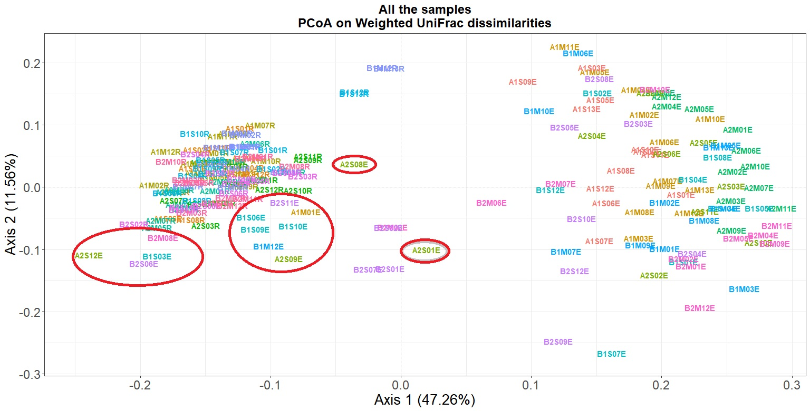
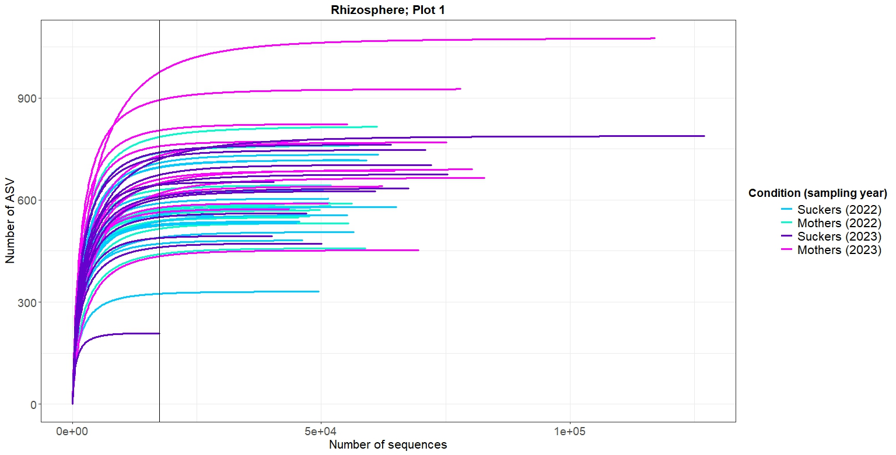
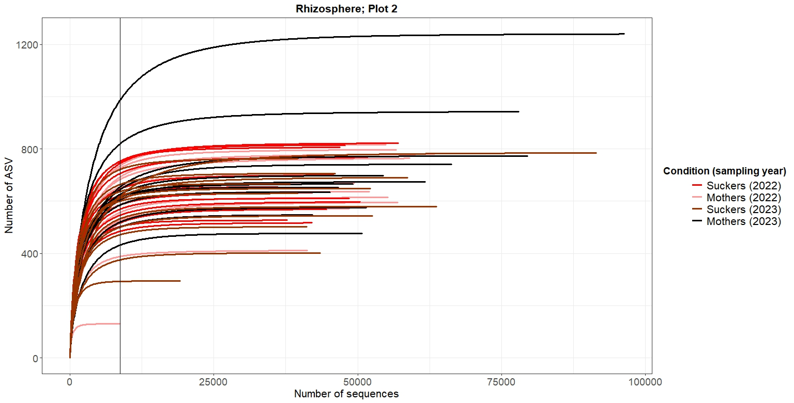
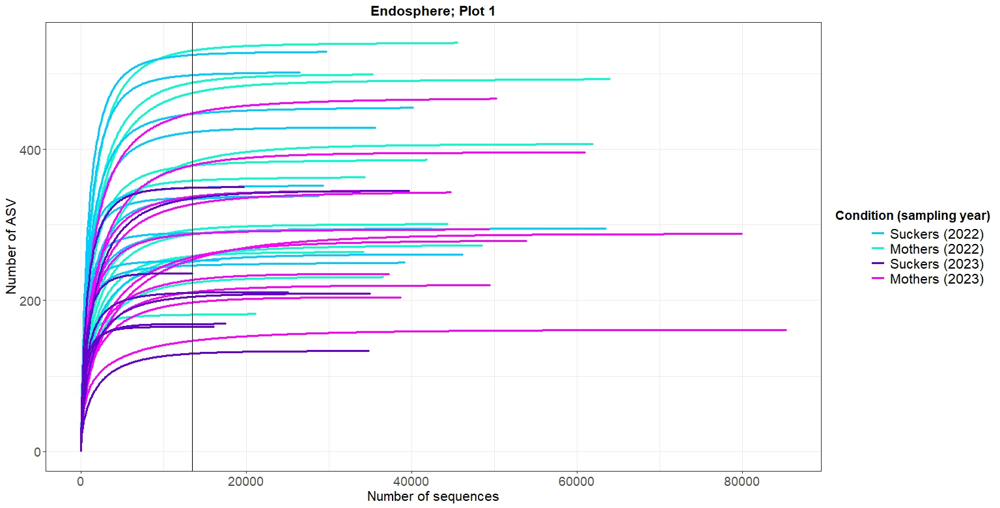
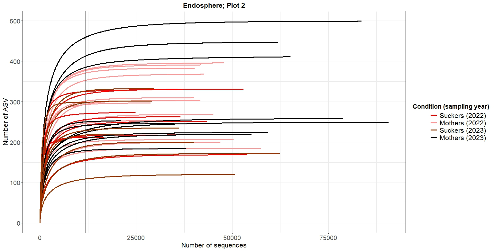
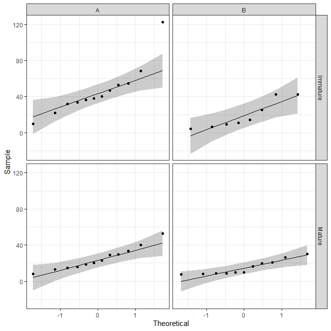
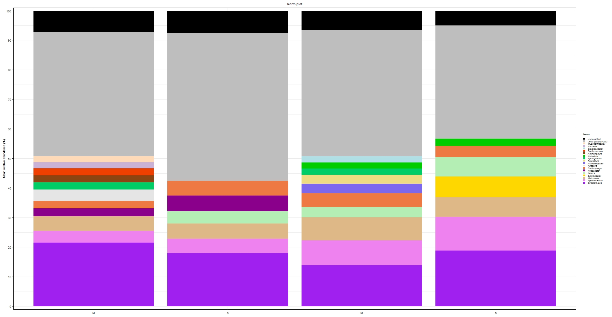
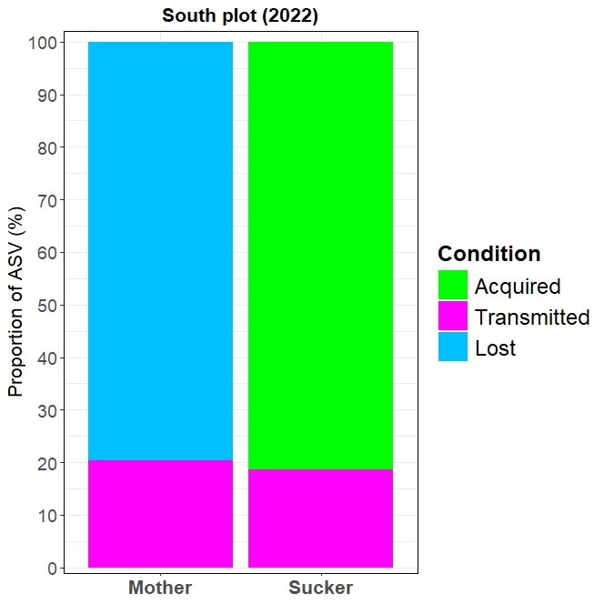

if (!requireNamespace("BiocManager", quietly = TRUE))
install.packages("BiocManager")
BiocManager::install("ANCOMBC")
BiocManager::install("phyloseq")
if (!require("BiocManager", quietly = TRUE))
install.packages("BiocManager")
BiocManager::install("microbiome")
install.packages("dplyr")
install.packages("tidyverse")
install.packages("ggplot2")
install.packages("GUniFrac")
install.packages("phangorn")
install.packages("vegan")
install.packages("gdata")
install.packages("purrr")
install.packages("devtools")
install.packages("rstatix")
install.packages("ggstasplot")
install.packages("DescTools")
install.packages("tibble")
install.packages("WRS2")
install.packages("tibble")
install.packages("ARTool")
if (!requireNamespace("BiocManager", quietly = TRUE))
install.packages("BiocManager")
BiocManager::install("edgeR")
remotes::install_github("wilkelab/ggtext")
install_github("pmartinezarbizu/pairwiseAdonis/pairwiseAdonis")
install_github("nuriamw/micro4all")
library(ANCOMBC)
library(phyloseq)
library(microbiome)
library(dplyr)
library(tidyverse)
library(ggplot2)
library(GUniFrac)
library(vegan)
library(gdata)
library(purrr)
library(devtools)
library(rstatix)
library(ggstatsplot)
library(DescTools)
library(tibble)
library(WRS2)
library(ARTool)
library(edgeR)
library(pairwiseAdonis)
library(micro4all)Ecological analyses of bacterial dataset
Firstly, we have to install and load many packages needed to analyze our bacterial data:
Our analyses will based on phyloseq objects. That is to say, we are going to use phyloseq package
1. Create a phyloseq object
phyloseq object are very useful since they harbor several elements of interest: an ASV (or OTU) table in which the absolute abundance of each ASV is registered, the taxonomy of each ASV (from Domain or Kingdom to ASV level), a metadata table in which a full description of each sample is given, and finally, a phylogenetic tree at ASV level. Thus, lets load all the input files and create the phyloseq object. So, all the above mentioned files should be in our working directory:
data=read.table("ASV_Bacterias_final.txt", header = T, sep="\t")#load the ASV table
colnames_data=colnames(data)
mt=read.table("metadata_bacteria.txt",sep="\t", header=T)#load the metadata table
mt$Year=gsub("2022", "A", mt$Year)#we replaced the number of the years by a character
mt$Year=gsub("2023", "B", mt$Year)
mt$Replicate=as.character(mt$Replicate)#convert into characters
mt$Fusion=paste0(mt$Year, sep="_",mt$Plot, sep="_", mt$Condition,sep="_", mt$Compartment)#here we create a joined artificial variable in order to plot better our samples
mt$Condition_Year=paste0(mt$Condition,sep="_", mt$Year)#the same strategy
row.names(mt)=mt$Sample #the rownames of the metadata table should be identical to the name of the samplesThe order of the sample is very important! In particular, the order of the samples in the metadata file must be the same as the order of the samples in the ASV table. So, check (and correct it) previously
tax =data[,2:8]#indicate the taxonomy of each ASV: from Domain/Kingdom to ASV level
ASV=data[,9:ncol(data)]#indicate the ASV counts
dna=Biostrings::DNAStringSet(data$ASV_seqs) #save the sequence of each ASV into a variable
names(dna)= data$ASV_names
row.names(tax)=data$ASV_names#the name of each row should be the name of each ASV (i.e., "ASV02156")
row.names(ASV)=data$ASV_names
identical(rownames(ASV), rownames(tax))#this is very important and should give "TRUE". Otherwise, review the lines above because there is a mistaker elsewhere
phy_tree=phyloseq::read_tree("tree")#read the phylogenetic tree. In our case is named "tree"
unrooted_tree = phy_tree
ape::is.rooted(unrooted_tree)#if your phylogenetic tree is unrooted, it will give you "FALSE", and in that case, we have uproopt it as following
tree_root = ape::root(unrooted_tree, 1, resolve.root = T)#calculate the root
tree_root#it gives you the number of tips and nodes
ape::is.rooted(tree_root)#check that the tree now is uprooted
#Convert each element into suitable objects for the construction of a phyloseq object
phy_OTUtable=otu_table(ASV, taxa_are_rows = T)
phy_taxonomy=tax_table(as.matrix(tax))
phy_metadata=sample_data(mt)
#the tree is already in the proper format
phy_data_total=phyloseq(phy_OTUtable,phy_taxonomy,phy_metadata,tree_root)#bind all the elements into the phyloseq object
nsamples(phy_OTUtable); sum(sample_names(phy_metadata) %in% sample_names(phy_OTUtable)); nsamples(phy_metadata)#check all the elements have the same number of samples2. Data curation
The phyloseq object is already created, however, we still have to check the quality of the data. For instance, we have to check if all the samples are comprised by enough sequences, and if the sampling and sequencing efforts are enough. For that purpose, we have to check the number of total sequences
numsec=as.data.frame(colSums(otu_table(phy_data_total)))
View(numsec) #order the table in ascending order to check the lowest library size (the sample with the lowest number of sequences)We found that sample A2M05R had low number of sequences (8730), so let’s remove it from further analyses:
phy_data_total=subset_samples(phy_data_total,Sample != "A1S04E") #!= indicates "not equal to", so it means "select all the Samples different to the one we want to remove"Now, it would be interesting to check the quality of the sterilization process. We want to visualize in an ordination plot if rhizosphere and root endosphere samples are separated in the multivariate space. As indicated in the step 5, we have to normalize the ASV counts and then, calculate the ordination of the samples and plot them into a multivariate ordination plot:
todas_ASV=as.data.frame(otu_table(phy_data_total,taxa_are_rows = T))#obtain the ASV table from the phyloseq object
todas_mt=as.data.frame(sample_data(phy_data_total))#obtain the metadata table from the phyloseq object
todas_tax=as.data.frame(tax_table(phy_data_total))#obtain the taxonomy table from the phyloseq object
todas_tree=phy_tree(phy_data_total)#obtain the phylogenetic tree from the phyloseq object
#all the previous steps are required to create a new object suitable for edgeR functions
todas_edgeR = DGEList(counts = todas_ASV, samples = todas_mt, genes = todas_tax)#Create a DGEList object need for the TMM normalization
todas_edgeR = calcNormFactors(todas_edgeR)#calculate all the normalization factor so that we can correct potential biases associated to the different librazy sizes (different number of sequences per sample)
todas_ASV_norm = cpm(todas_edgeR, normalized.lib.sizes=T, log=F)#extracting the normalized abundance
todas_phy_OTU_norm=otu_table(as.data.frame(todas_ASV_norm,row.names=F),taxa_are_rows = T)#create the normalized phyloseq elements
todas_phy_taxonomy_norm=tax_table(as.matrix(todas_tax))
todas_phy_metadata_norm=sample_data(todas_mt)
taxa_names(todas_phy_OTU_norm)= taxa_names(todas_phy_taxonomy_norm)#add the name of the taxa
identical(rownames(todas_ASV_norm), rownames(todas_tax))#if everything is well calculated, it should give "TRUE"
todas_normalized_phyloseq<-phyloseq(todas_phy_OTU_norm,
todas_phy_taxonomy_norm,
todas_phy_metadata_norm,
todas_tree)#Create the new phyloseq object, in which the abundance of all the taxa is normalizedOne the normalization is done, the plot is made as follows:
PCOA_wuni= ordinate(todas_normalized_phyloseq, "PCoA", "wunifrac")#here we create the ordination plot (PCoA) based on Weighted UniFrac distances
peso=PCOA_wuni$values$Relative_eig[1:2]#save the percentage of the variance explained by each axis into a new variable
peso#check the variance explained
p= plot_ordination(todas_normalized_phyloseq, PCOA_wuni,type= "samples", color= "Fusion",shape = "Year")+#indicate the variable of interest (i.e., if you want to color by "Plot", indicate "color=Plot")
geom_point(alpha = 4, size = 4.5)+
labs(x=paste0("Axis 1 (",round(peso[1]*100,digits = 2),"%)"),
y=paste0("Axis 2 (",round(peso[2]*100,digits = 2),"%)"))+
geom_text(aes(label=Sample, fontface="bold"), hjust=0.15, vjust=0.15, nudge_y = 0.0075,size=4, show.legend =F) +
scale_shape_manual(values=c("2022"=16, "2023"=17))+#the codes of the specific shapes
theme_bw()+
theme(legend.position = "none",
axis.text = element_text(size=18),
axis.title = element_text(size = 20),
plot.title = element_text(hjust=0.5, face="bold",size=18),
legend.text = element_text(size = 18))+
geom_hline(aes(yintercept = c(0.00)), lty=2, colour="grey")+
geom_vline(aes(xintercept = c(0.00)), lty=2, colour="grey")+
ggtitle("All the samples\nPCoA on Weighted UniFrac dissimilarities")
x11()
p
As shown in Figure 1, there are some root endosphere samples that are closer than rhizosphere samples than other root endosphere samples. Thus, we consider that these roots were not properly sterilized. We should remove them because we are not aware of their origin
This, we have to curate our dataset, and remove all these samples:
phy_total=subset_samples(phy_data_total,
Sample != "A1S04E" &
Sample!= "A1M01E"&
Sample != "A2S09E" & Sample != "A2S12E"& Sample != "A2S08E" & Sample!="A2S01E"&
Sample !="B1S03E"& Sample != "B1S06E"& Sample!="B1S09E"& Sample!="B1S10E"&
Sample !="B1M12E"&
Sample != "B2S06E" & Sample !="B2S11E" & Sample !="B2S07E" & Sample !="B2S02E" &
Sample !="B2M08E" & Sample !="B2M03E")
numsec_pruned=as.data.frame(colSums(otu_table(phy_total)))
numASV_pruned=as.data.frame((otu_table(phy_total)))
write.table(data.frame(" "=rownames(numsec_pruned),numsec_pruned),file="Numero_secuencias_deTrabajo.txt", sep="\t",row.names =F)#save the table with the number of total sequences per sample
write.table(data.frame(" "=rownames(numASV_pruned),numASV_pruned),file="Numero_ASVs_deTrabajo.txt", sep="\t",row.names =F)#save the table with the number of total ASVs3. Rarefaction curves
We still have to check whether the sequencing effort has been enough, so let’s have a look at rarefaction curves. They are the best way to visualize the quality of the sequencing and sampling.
In our case, we should visualize the rarefaction curves by plant compartment, to check whether the data curation was made well
min(sample_sums(phy_total))#calculate the smallest library size
colSums(otu_table(phy_total))[which.min(colSums(otu_table(phy_total)))]#check which is the sample with the smallest library size
mt=as.data.frame(sample_data(phy_total))[order(as.character(rownames(as.data.frame(sample_data(phy_total)))),decreasing=F),]#obtain the metadata table
otu = as.data.frame(t(otu_table(phy_total)))#obtain the ASV table and traspose it
otu=otu[order(as.character(rownames(otu)),decreasing=FALSE),]
rownames(otu)==rownames(mt)
rownames(otu)=paste0(rownames(otu),"/",mt$Compartment)
sample_names = rownames(otu)#we are creating a new column so that then we can plot based on the plant compartment (or based on other variable)
out = rarecurve(otu, step = 100, label = F) #calculate the rarefaction
rare = lapply(out, function(x){
b = as.data.frame(x)
b = data.frame(ASV = b[,1], raw.read = rownames(b))
b$raw.read = as.numeric(gsub("N", "", b$raw.read))
return(b)
})#this function is to create a table from the rarefaction variable
names(rare) = sample_names
rare = map_dfr(rare, function(x){
z = data.frame(x)
return(z)
}, .id = "Sample")
rare$Compartment=rare$Sample #these lines aimed at creating a new column in which the information needed for the plotting is included. You should include here the factor that determines the color of the curves
rare$Compartment=gsub(".*/", "", rare$Compartment)#replace all the text before "/"
rare$raw.read=as.numeric(rare$raw.read)
#Plotting
p_endo_rizo=ggplot(rare, aes(x=raw.read, y=ASV, colour=Compartment, group=Sample)) +
theme_bw()+
geom_point(aes(colour=Compartment), size=0.85)+
geom_line(aes(colour=Compartment),size=1.2)+
geom_vline(aes(xintercept = min(sample_sums(phy_total))),
lty=1, colour="black")+
scale_fill_manual(values = c("Endosphere"="black","Rhizosphere"="#66CC33"))+
scale_color_manual(values = c("Endosphere"="black", "Rhizosphere"="#66CC33"),
name="Compartment",
breaks=c("Endosphere", "Rhizosphere"),
labels=c("Endosphere", "Rhizosphere"))+
labs(title= "All the samples", x="Number of sequences", y="Number of ASV")+
guides(alpha=FALSE)+
theme(legend.key=element_blank(),
legend.title.align = 0.85,
legend.title = element_text(face="bold",size=14),
axis.text = element_text(size=14),
axis.title = element_text(size = 16),
plot.title = element_text(hjust=0.5, face="bold", size=16),
legend.text = element_text(size = 16))
x11()
p_endo_rizoNow yes, we will create rarefaction curves. But we have to split the data according to the orchards, otherwise it will be really difficult to understand the graphs. So, let’s subset the data according to our experimental design. We will create new phyloseq objects: two per plant compartment, corresponding to each orchard or plot.
rizo1=subset_samples(phy_total, Compartment=="Rhizosphere" & Plot=="Plot1")
rizo1=prune_taxa(taxa_sums(rizo1)>0.0, rizo1)#
rizo2=subset_samples(phy_total, Compartment=="Rhizosphere" & Plot== "Plot2")
rizo2=prune_taxa(taxa_sums(rizo2)>0.0, rizo2)
endo1=subset_samples(phy_total, Compartment=="Endosphere" & Plot=="Plot1")
endo1=prune_taxa(taxa_sums(endo1)>0.0, endo1)
endo2=subset_samples(phy_total, Compartment=="Endosphere" & Plot== "Plot2")
endo2=prune_taxa(taxa_sums(endo2)>0.0, endo2)Now, calculate and plot the rarefaction curves:
min(sample_sums(rizo1))
colSums(otu_table(rizo1))[which.min(colSums(otu_table(rizo1)))]
mt=as.data.frame(sample_data(rizo1))[order(as.character(rownames(as.data.frame(sample_data(rizo1)))),decreasing=F),]
otu = otu_table(rizo1)
otu = as.data.frame(t(otu))
otu=otu[order(as.character(rownames(otu)),decreasing=FALSE),]
rownames(otu)==rownames(mt)
rownames(otu)=paste0(rownames(otu),"/",mt$Condition_Year)#we want to color in different colors mothers and suckers, and also the samples taken in each year
sample_names = rownames(otu)
out <- rarecurve(otu, step = 100, label = F)
rare <- lapply(out, function(x){
b <- as.data.frame(x)
b <- data.frame(ASV = b[,1], raw.read = rownames(b))
b$raw.read <- as.numeric(gsub("N", "", b$raw.read))
return(b)
})
names(rare) <- sample_names
rare <- map_dfr(rare, function(x){
z <- data.frame(x)
return(z)
}, .id = "Sample")
rare$Condition_Year=rare$Sample
rare$Condition_Year=gsub(".*/", "", rare$Condition_Year)
rare$raw.read=as.numeric(rare$raw.read)
p_rizo1=ggplot(rare, aes(x=raw.read, y=ASV, colour=Condition_Year, group=Sample)) +
theme_bw()+
geom_point(aes(colour=Condition_Year), size=0.85)+
geom_line(aes(colour=Condition_Year),size=1.2)+
geom_vline(aes(xintercept = min(sample_sums(rizo1))),
lty=1, colour="black")+
scale_fill_manual(values = c("Immature_A"="#00CCFF", "Mature_A"="#00FFCC",
"Immature_B"="#6600CC" ,"Mature_B"="magenta"))+
scale_color_manual(values = c("Immature_A"="#00CCFF", "Mature_A"="#00FFCC",
"Immature_B"="#6600CC" ,"Mature_B"="magenta"),
name="Condition (sampling year)",
breaks=c("Immature_A", "Mature_A",
"Immature_B" ,"Mature_B"),
labels=c("Suckers (2022)", "Mothers (2022)",
"Suckers (2023)","Mothers (2023)"))+
labs(title= "Rhizosphere; Plot 1", x="Number of sequences", y="Number of ASV")+
guides(alpha=FALSE)+
theme(legend.key=element_blank(),
legend.title.align = 0.85,
legend.title = element_text(face="bold",size=14),
axis.text = element_text(size=14),
axis.title = element_text(size = 16),
plot.title = element_text(hjust=0.5, face="bold", size=16),
legend.text = element_text(size = 16))
x11()
p_rizo1
#Plot2
min(sample_sums(rizo2))
colSums(otu_table(rizo2))[which.min(colSums(otu_table(rizo2)))]
mt=as.data.frame(sample_data(rizo2))[order(as.character(rownames(as.data.frame(sample_data(rizo2)))),decreasing=F),]
otu = otu_table(rizo2)
otu = as.data.frame(t(otu))
otu=otu[order(as.character(rownames(otu)),decreasing=FALSE),]
rownames(otu)==rownames(mt)
rownames(otu)=paste0(rownames(otu),"/",mt$Condition_Year)
sample_names = rownames(otu)
out <- rarecurve(otu, step = 100, label = F)
rare <- lapply(out, function(x){
b <- as.data.frame(x)
b <- data.frame(ASV = b[,1], raw.read = rownames(b))
b$raw.read <- as.numeric(gsub("N", "", b$raw.read))
return(b)
})
names(rare) <- sample_names
rare <- map_dfr(rare, function(x){
z <- data.frame(x)
return(z)
}, .id = "Sample")
rare$Condition_Year=rare$Sample
rare$Condition_Year=gsub(".*/", "", rare$Condition_Year)
rare$raw.read=as.numeric(rare$raw.read)
p_rizo2=ggplot(rare, aes(x=raw.read, y=ASV, colour=Condition_Year, group=Sample)) +
theme_bw()+
geom_point(aes(colour=Condition_Year), size=0.85)+
geom_line(aes(colour=Condition_Year),size=1.2)+
geom_vline(aes(xintercept = min(sample_sums(rizo2))),
lty=1, colour="black")+
scale_fill_manual(values = c("Immature_A"="#FF0000", "Mature_A"="#FF9999",
"Immature_B"="#993300" ,"Mature_B"="black"))+
scale_color_manual(values = c("Immature_A"="#FF0000", "Mature_A"="#FF9999",
"Immature_B"="#993300" ,"Mature_B"="black"),
name="Condition (sampling year)",
breaks=c("Immature_A", "Mature_A",
"Immature_B" ,"Mature_B"),
labels=c("Suckers (2022)", "Mothers (2022)",
"Suckers (2023)","Mothers (2023)"))+
labs(title= "Rhizosphere; Plot 2", x="Number of sequences", y="Number of ASV")+
guides(alpha=FALSE)+
theme(legend.key=element_blank(),
legend.title.align = 0.85,
legend.title = element_text(face="bold",size=14),
axis.text = element_text(size=14),
axis.title = element_text(size = 16),
plot.title = element_text(hjust=0.5, face="bold", size=16),
legend.text = element_text(size = 16))
x11()
p_rizo2
#ENDOSPHERE SAMPLES:
min(sample_sums(endo1))
colSums(otu_table(endo1))[which.min(colSums(otu_table(endo1)))]
mt=as.data.frame(sample_data(endo1))[order(as.character(rownames(as.data.frame(sample_data(endo1)))),decreasing=F),]
otu = otu_table(endo1)
otu = as.data.frame(t(otu))
otu=otu[order(as.character(rownames(otu)),decreasing=FALSE),]
rownames(otu)==rownames(mt)
rownames(otu)=paste0(rownames(otu),"/",mt$Condition_Year)
sample_names = rownames(otu)
out <- rarecurve(otu, step = 100, label = F)
rare <- lapply(out, function(x){
b <- as.data.frame(x)
b <- data.frame(ASV = b[,1], raw.read = rownames(b))
b$raw.read <- as.numeric(gsub("N", "", b$raw.read))
return(b)
})
names(rare) <- sample_names
rare <- map_dfr(rare, function(x){
z <- data.frame(x)
return(z)
}, .id = "Sample")
rare$Condition_Year=rare$Sample
rare$Condition_Year=gsub(".*/", "", rare$Condition_Year)
rare$raw.read=as.numeric(rare$raw.read)
p_endo1=ggplot(rare, aes(x=raw.read, y=ASV, colour=Condition_Year, group=Sample)) +
theme_bw()+
geom_point(aes(colour=Condition_Year), size=0.85)+
geom_line(aes(colour=Condition_Year),size=1.2)+
geom_vline(aes(xintercept = min(sample_sums(endo1))),
lty=1, colour="black")+
scale_fill_manual(values = c("Immature_A"="#00CCFF", "Mature_A"="#00FFCC",
"Immature_B"="#6600CC" ,"Mature_B"="magenta"))+
scale_color_manual(values = c("Immature_A"="#00CCFF", "Mature_A"="#00FFCC",
"Immature_B"="#6600CC" ,"Mature_B"="magenta"),
name="Condition (sampling year)",
breaks=c("Immature_A", "Mature_A",
"Immature_B" ,"Mature_B"),
labels=c("Suckers (2022)", "Mothers (2022)",
"Suckers (2023)","Mothers (2023)"))+
labs(title= "Endosphere; Plot 1", x="Number of sequences", y="Number of ASV")+
guides(alpha=FALSE)+
theme(legend.key=element_blank(),
legend.title.align = 0.85,
legend.title = element_text(face="bold",size=14),
axis.text = element_text(size=14),
axis.title = element_text(size = 16),
plot.title = element_text(hjust=0.5, face="bold", size=16),
legend.text = element_text(size = 16))
x11()
p_endo1
#Plot2
min(sample_sums(endo2))
colSums(otu_table(endo2))[which.min(colSums(otu_table(endo2)))]
mt=as.data.frame(sample_data(endo2))[order(as.character(rownames(as.data.frame(sample_data(endo2)))),decreasing=F),]
otu = otu_table(endo2)
otu = as.data.frame(t(otu))
otu=otu[order(as.character(rownames(otu)),decreasing=FALSE),]
rownames(otu)==rownames(mt)
rownames(otu)=paste0(rownames(otu),"/",mt$Condition_Year)
sample_names = rownames(otu)
out <- rarecurve(otu, step = 100, label = F)
rare <- lapply(out, function(x){
b <- as.data.frame(x)
b <- data.frame(ASV = b[,1], raw.read = rownames(b))
b$raw.read <- as.numeric(gsub("N", "", b$raw.read))
return(b)
})
names(rare) <- sample_names
rare <- map_dfr(rare, function(x){
z <- data.frame(x)
return(z)
}, .id = "Sample")
rare$Condition_Year=rare$Sample
rare$Condition_Year=gsub(".*/", "", rare$Condition_Year)
rare$raw.read=as.numeric(rare$raw.read)
p_endo2=ggplot(rare, aes(x=raw.read, y=ASV, colour=Condition_Year, group=Sample)) +
theme_bw()+
geom_point(aes(colour=Condition_Year), size=0.85)+
geom_line(aes(colour=Condition_Year),size=1.2)+
geom_vline(aes(xintercept = min(sample_sums(endo2))),
lty=1, colour="black")+
scale_fill_manual(values = c("Immature_A"="#FF0000", "Mature_A"="#FF9999",
"Immature_B"="#993300" ,"Mature_B"="black"))+
scale_color_manual(values = c("Immature_A"="#FF0000", "Mature_A"="#FF9999",
"Immature_B"="#993300" ,"Mature_B"="black"),
name="Condition (sampling year)",
breaks=c("Immature_A", "Mature_A",
"Immature_B" ,"Mature_B"),
labels=c("Suckers (2022)", "Mothers (2022)",
"Suckers (2023)","Mothers (2023)"))+
labs(title= "Endosphere; Plot 2", x="Number of sequences", y="Number of ASV")+
guides(alpha=FALSE)+
theme(legend.key=element_blank(),
legend.title.align = 0.85,
legend.title = element_text(face="bold",size=14),
axis.text = element_text(size=14),
axis.title = element_text(size = 16),
plot.title = element_text(hjust=0.5, face="bold", size=16),
legend.text = element_text(size = 16))
x11()
p_endo2As shown in Figures 2-5, at the same rarefaction levels, most of the samples reached to the asymptote, so the sequencing effort can be considered enough. Furthermore, no clear patterns of richnes can be deduced from the rarefaction curves
   
4. Alpha diversity analysis
We are going to estimate the richness, diversity and evenness of each sample by calculating the number of observed ASVs, and Shannon’s and Inverse of Simpson and Pielou’s indices, respectively.
Some alpha diversity indices are sensitive to different library sizes, so first, we will rarefy all the samples to the smallest library size to avoid potential biases associated to different number of sequences.
Note
It should be made a rarefaction per groups of samples to be compared. For instance, if we want to compare the diversity of rhizosphere bacterial communitites of Mother and Suckers plants located in the south plot, we should calculate the rarefaction level corresponding to the subgroup of Rhizosphere samples of the south plot (namely, object rizo1). And then, rarefy to the smallest library size of the samples included in the object rizo1.
#a) Endosphere samples
#a.1) South plot
rarefac_endo1=rarefy_even_depth(endo1, sample.size = min(sample_sums(endo1)),rngseed=T)#rarefaction. You can indicate manually the minimum sample size or by using the function "min"
sample_sums(rarefac_endo1) #check that now all the samples have the same number of sequences
colSums(otu_table(rarefac_endo1))[which.min(colSums(otu_table(rarefac_endo1)))]
indices_endo1=estimate_richness(rarefac_endo1, measures=c("Observed", "InvSimpson", "Shannon"))#calculate the indices
indices_endo1$Pielou=indices_endo1$Shannon/log(indices_endo1$Observed)#calculated manually the Pielou index
rownames(sample_data(rarefac_endo1))==row.names(indices_endo1)
mt_indices_endo1=data.frame(sample_data(rarefac_endo1))#extract the metadata
indices_endo1=add_column(indices_endo1, mt_indices_endo1[1:ncol(mt_indices_endo1)], .before = "Observed")#add the metadata to the indices table, before the column named "Observed"
write.table(data.frame(" "=rownames(indices_endo1),indices_endo1),file="Indices_Endo_Plot1_porReplicas.txt", sep="\t",row.names =F)
#We have already calculated the indices per replicates but we are interested in the mean and standard values per groups of samples, so let's calculate them:
media_endo1=aggregate(indices_endo1[,11:14], list(grouping=indices_endo1$Condition_Year), mean)%>% mutate_if(is.numeric, round, digits=2)#be careful. Here you have to indicate the position of the columns where the values of the indices are placed
sd_endo1=aggregate(indices_endo1[,11:14], list(grouping=indices_endo1$Condition_Year), sd)%>% mutate_if(is.numeric, round, digits=2)
mean_sd = NULL
for (i in 2:5){ #be careful with the position of the numeric values (alpha indices)
mean_sd <- cbind(mean_sd,paste0(media_endo1[,i], " +/- ", sd_endo1[,i]))}#then in Excel you can replace "+/-" by the corresponding symbol
tabla_publicaciones_endo1 = cbind(media_endo1$grouping, mean_sd)
colnames(tabla_publicaciones_endo1) = c("Group","Observed", "Shannon", "InvSimpson", "Pielou")
as.data.frame(tabla_publicaciones_endo1)
write.table(tabla_publicaciones_endo1,file="Indices_media_sd_Endo_Plot1.txt", sep="\t",row.names =F)#this table shows the mean +/- sd of the indices for each group of samples. Ready for publication
#a.2) North plot
rarefac_endo2=rarefy_even_depth(endo2, sample.size = min(sample_sums(endo2)),rngseed=T)
sample_sums(rarefac_endo2)
colSums(otu_table(rarefac_endo2))[which.min(colSums(otu_table(rarefac_endo2)))]
indices_endo2=estimate_richness(rarefac_endo2, measures=c("Observed", "InvSimpson", "Shannon"))
indices_endo2$Pielou=indices_endo2$Shannon/log(indices_endo2$Observed)
rownames(sample_data(rarefac_endo2))==row.names(indices_endo2)
mt_indices_endo2=data.frame(sample_data(rarefac_endo2))
indices_endo2=add_column(indices_endo2, mt_indices_endo2[1:ncol(mt_indices_endo2)], .before = "Observed")
write.table(data.frame(" "=rownames(indices_endo2),indices_endo2),file="Indices_Endo_Plot2_porReplicas.txt", sep="\t",row.names =F)
media_endo2=aggregate(indices_endo2[,11:14], list(grouping=indices_endo2$Condition_Year), mean)%>% mutate_if(is.numeric, round, digits=2)
sd_endo2=aggregate(indices_endo2[,11:14], list(grouping=indices_endo2$Condition_Year), sd)%>% mutate_if(is.numeric, round, digits=2)
mean_sd = NULL
for (i in 2:5){
mean_sd <- cbind(mean_sd,paste0(media_endo2[,i], " +/- ", sd_endo2[,i]))}
tabla_publicaciones_endo2 = cbind(media_endo2$grouping, mean_sd)
colnames(tabla_publicaciones_endo2) = c("Group","Observed", "Shannon", "InvSimpson", "Pielou")
as.data.frame(tabla_publicaciones_endo2)
write.table(tabla_publicaciones_endo2,file="Indices_media_sd_Endo_Plot2.txt", sep="\t",row.names =F)
#b) Rhizosphere
#b.1) South plot
rarefac_rizo1=rarefy_even_depth(rizo1, sample.size = min(sample_sums(rizo1)),rngseed=T)
sample_sums(rarefac_rizo1)
colSums(otu_table(rarefac_rizo1))[which.min(colSums(otu_table(rarefac_rizo1)))]
indices_rizo1=estimate_richness(rarefac_rizo1, measures=c("Observed", "InvSimpson", "Shannon"))
indices_rizo1$Pielou=indices_rizo1$Shannon/log(indices_rizo1$Observed)
rownames(sample_data(rarefac_rizo1))==row.names(indices_rizo1)
mt_indices_rizo1=data.frame(sample_data(rarefac_rizo1))
indices_rizo1=add_column(indices_rizo1, mt_indices_rizo1[1:ncol(mt_indices_rizo1)], .before = "Observed")
write.table(data.frame(" "=rownames(indices_rizo1),indices_rizo1),file="Indices_rizo_Plot1_porReplicas.txt", sep="\t",row.names =F)
media_rizo1=aggregate(indices_rizo1[,11:14], list(grouping=indices_rizo1$Condition_Year), mean)%>% mutate_if(is.numeric, round, digits=2)
sd_rizo1=aggregate(indices_rizo1[,11:14], list(grouping=indices_rizo1$Condition_Year), sd)%>% mutate_if(is.numeric, round, digits=2)
mean_sd = NULL
for (i in 2:5){ #OJO aqui con el numero de las columnas numericas
mean_sd <- cbind(mean_sd,paste0(media_rizo1[,i], " +/- ", sd_rizo1[,i]))}
tabla_publicaciones_rizo1 = cbind(media_rizo1$grouping, mean_sd)
colnames(tabla_publicaciones_rizo1) = c("Group","Observed", "Shannon", "InvSimpson", "Pielou")
as.data.frame(tabla_publicaciones_rizo1)
write.table(tabla_publicaciones_rizo1,file="Indices_media_sd_rizo_Plot1.txt", sep="\t",row.names =F)
#b.2) North plot
rarefac_rizo2=rarefy_even_depth(rizo2, sample.size = min(sample_sums(rizo2)),rngseed=T)
sample_sums(rarefac_rizo2)
colSums(otu_table(rarefac_rizo2))[which.min(colSums(otu_table(rarefac_rizo2)))]
indices_rizo2=estimate_richness(rarefac_rizo2, measures=c("Observed", "InvSimpson", "Shannon"))
indices_rizo2$Pielou=indices_rizo2$Shannon/log(indices_rizo2$Observed)
rownames(sample_data(rarefac_rizo2))==row.names(indices_rizo2)
mt_indices_rizo2=data.frame(sample_data(rarefac_rizo2))
indices_rizo2=add_column(indices_rizo2, mt_indices_rizo2[1:ncol(mt_indices_rizo2)], .before = "Observed")
write.table(data.frame(" "=rownames(indices_rizo2),indices_rizo2),file="Indices_rizo_Plot2_porReplicas.txt", sep="\t",row.names =F)
media_rizo2=aggregate(indices_rizo2[,11:14], list(grouping=indices_rizo2$Condition_Year), mean)%>% mutate_if(is.numeric, round, digits=2)
sd_rizo2=aggregate(indices_rizo2[,11:14], list(grouping=indices_rizo2$Condition_Year), sd)%>% mutate_if(is.numeric, round, digits=2)
mean_sd = NULL
for (i in 2:5){
mean_sd <- cbind(mean_sd,paste0(media_rizo2[,i], " +/- ", sd_rizo2[,i]))}
tabla_publicaciones_rizo2 = cbind(media_rizo2$grouping, mean_sd)
colnames(tabla_publicaciones_rizo2) = c("Group","Observed", "Shannon", "InvSimpson", "Pielou")
as.data.frame(tabla_publicaciones_rizo2)
write.table(tabla_publicaciones_rizo2,file="Indices_media_sd_rizo_Plot2.txt", sep="\t",row.names =F)4.1 Statistical analysis
We have just calculated the alpha indices per sample and per group of samples, but we have to compare them among group of samples. For that purpose, we will apply univariate statistic test. We will go into different steps, which briefly consist of:
Check the normality of the data: we have to confirm whether our variables follow a normal distribution. If they are not normally distributed, we will also check if they are very far from the normal distribution.
Check the homoscedasticity of the data: confirm if dispersion of the variable is the same in all the groups of samples to compare. If the distribution of the variables is normal (or almost normal) and there is homogeneity of variances, we will apply parametric tests. Otherwise, we will use non-parametric tests.
Check the presence of the outliers. Outliers are not a problem, but we have to check if they are extreme outliers. In that case, we will apply robust tests
Apply the proper statistical test. Depending on the characteristics of the variables and the experimental design (one factor to be studied: one-way statistics; two factors: two-way statistical tests).
Calculate the size of the effect. In case we find statistical differences among groups of samples in the studied variables, we have to measure the magnitude of the effect.
We have to study separately each individual variable (in this case, each alpha diversity index).
In this example, we are interested in two factors: the effect of the sampling year, and the effect of the plants’ developmental stage, also named Condition in this web
#a) ENDOSPHERE
#a.1) South plot
#Normality
indices_endo1%>%
group_by(Condition, Year)%>%#
shapiro_test(Observed)
indices_endo1%>%
group_by(Condition, Year)%>%
shapiro_test(Shannon)
indices_endo1%>%
group_by(Condition, Year)%>%
shapiro_test(InvSimpson)#data are not normally distributed
indices_endo1%>%
group_by(Condition, Year)%>%
shapiro_test(Pielou)
x11()#let's see how far are our data from the normal distribution into a qq-plot.
ggqqplot(indices_endo1, "InvSimpson", ggtheme = theme_bw()) +
facet_grid(Condition ~ Year)As shown in Figure 6, just one point is far from the normal distribution, so we can still applied parametric data is homoscedasticity hypothesis is met.

#Homoscedasticity
indices_endo1 %>% levene_test(Observed ~ Condition*Year)
indices_endo1 %>% levene_test(Shannon ~ Condition*Year)
indices_endo1 %>% levene_test(InvSimpson ~ Condition*Year)
indices_endo1 %>% levene_test(Pielou ~ Condition*Year)
#Outliers
a=indices_endo1 %>% group_by(Condition,Year)%>% identify_outliers(Observed);View(a)
b=indices_endo1 %>% group_by(Condition, Year)%>% identify_outliers(Shannon);View(b)
c=indices_endo1 %>% group_by(Condition, Year)%>% identify_outliers(InvSimpson);View(c)
d=indices_endo1 %>%group_by(Condition, Year)%>% identify_outliers(Pielou); View(d)
#Hypothesis contrasting tests
indices_endo1 %>% anova_test(Observed ~ Condition * Year)#two-way ANOVA because our data are homoscedatic
indices_endo1 %>% anova_test(Shannon ~ Condition * Year)
indices_endo1 %>% anova_test(Pielou ~ Condition * Year)
indices_endo1$Condition=as.factor(indices_endo1$Condition)#robust test because Invesrse of Simpson have extreme outliers
indices_endo1$Year=as.factor(indices_endo1$Year)
t2way(InvSimpson ~ Condition*Year, data=indices_endo1)
#We did not find the interaction between Year and plant developmental Condition significant in any of the variables studied, but the effect of Year or Condition (or both) was statistaclly significant on some of the indices. In that case, we have to study the effect of each factor individually:
#Post-hoc tests
indices_endo1 %>%pairwise_t_test(Observed~Year)
indices_endo1 %>%pairwise_t_test(Shannon~Year)
indices_endo1 %>%pairwise_t_test(Pielou~Condition)
indices_endo1 %>%pairwise_t_test(Pielou~Year)
indices_endo1$Condition=as.factor(indices_endo1$Condition)
indices_endo1$Year=as.factor(indices_endo1$Year)
mcp2atm(InvSimpson~Year*Condition, data=indices_endo1) #the robust post-hoc test
#a.2) North plot
#Normality
indices_endo2%>%
group_by(Condition, Year)%>%
shapiro_test(Observed)
indices_endo2%>%
group_by(Condition, Year)%>%
shapiro_test(Shannon)
indices_endo2%>%
group_by(Condition, Year)%>%
shapiro_test(InvSimpson)
indices_endo2%>%
group_by(Condition, Year)%>%
shapiro_test(Pielou)
x11()
ggqqplot(indices_endo2, "InvSimpson", ggtheme = theme_bw()) +
facet_grid(Condition ~ Year)
#Homoscedasticity
indices_endo2 %>% levene_test(Observed ~ Condition*Year)
indices_endo2 %>% levene_test(Shannon ~ Condition*Year)
indices_endo2 %>% levene_test(InvSimpson ~ Condition*Year)
indices_endo2 %>% levene_test(Pielou ~ Condition*Year)
#outliers
a=indices_endo2 %>%group_by(Condition,Year)%>%identify_outliers(Observed); View(a)
b=indices_endo2 %>%group_by(Condition, Year)%>%identify_outliers(Shannon);View(b)
c=indices_endo2 %>%group_by(Condition, Year)%>%identify_outliers(InvSimpson); View(c)
d=indices_endo2 %>%group_by(Condition, Year)%>%identify_outliers(Pielou);View(d)
#two-way tests
indices_endo2 %>% anova_test(Observed ~ Condition * Year)#two way ANOVA
indices_endo2 %>% anova_test(Shannon ~ Condition * Year)
indices_endo2$Condition=as.factor(indices_endo2$Condition)
indices_endo2$Year=as.factor(indices_endo2$Year)
t2way(InvSimpson ~ Condition*Year, data=indices_endo2)#robust test
#The dispersion of the Pielou index for both groups of samples is not homogeneous, so we cannot compute parametric tests. However, there are not suitable options for non-parametric two-way tests. Let's make a data transformation according to this tutorial.http://depts.washington.edu/acelab/proj/art/index.html
indices_endo2$Condition=as.factor(indices_endo2$Condition)
indices_endo2$Year=as.factor(indices_endo2$Year)
m = art(Observed ~ Year * Condition, data=indices_endo2) # linear model syntax; see lm()
mm=anova(m)
eta_squared(mm)
#B) RHIZOSPHERE
#b.1) South plot
#normality
indices_rizo1%>%
group_by(Condition, Year)%>%
shapiro_test(Observed)
indices_rizo1%>%
group_by(Condition, Year)%>%
shapiro_test(Shannon)
indices_rizo1%>%
group_by(Condition, Year)%>%
shapiro_test(InvSimpson)
indices_rizo1%>%
group_by(Condition, Year)%>%
shapiro_test(Pielou)
x11()
ggqqplot(indices_rizo1, "Observed", ggtheme = theme_bw()) +
facet_grid(Condition ~ Year)
x11()
ggqqplot(indices_rizo1, "InvSimpson", ggtheme = theme_bw()) +
facet_grid(Condition ~ Year)
x11()
ggqqplot(indices_rizo1, "Pielou", ggtheme = theme_bw()) +
facet_grid(Condition ~ Year)
#Homocesdasticity
indices_rizo1 %>% levene_test(Observed ~ Condition*Year)
indices_rizo1 %>% levene_test(Shannon ~ Condition*Year)
indices_rizo1 %>% levene_test(InvSimpson ~ Condition*Year)
indices_rizo1 %>% levene_test(Pielou ~ Condition*Year)
#Outliers
a=indices_rizo1 %>% group_by(Condition,Year)%>%identify_outliers(Observed); View(a)
b=indices_rizo1 %>% group_by(Condition, Year)%>%identify_outliers(Shannon); View(b)
c=indices_rizo1 %>% group_by(Condition, Year)%>%identify_outliers(InvSimpson);View(c)
d=indices_rizo1 %>% group_by(Condition, Year)%>%identify_outliers(Pielou);View(d)
#we found that Observed and InvSimpson have extremo outliers. We should check wether applying robust methods we maintain the homoscedasticity of the data
indices_rizo1%>% filter(between(Observed,
quantile(Observed,0.1), #remove the 10% of the data (in one tail)
quantile(Observed, 0.9)))%>%#remove the 10% of the data (in the other tail)
levene_test(Observed ~ Year*Plot)#still homoscedastic
indices_rizo1%>% filter(between(InvSimpson,
quantile(InvSimpson,0.1),
quantile(InvSimpson, 0.9)))%>%
levene_test(InvSimpson ~ Year*Plot)#still homoscedastic
#two-way tests
indices_rizo1$Condition=as.factor(indices_rizo1$Condition)
indices_rizo1$Year=as.factor(indices_rizo1$Year)
t2way(Observed ~ Condition*Year, data=indices_rizo1)#robust test
indices_rizo1 %>% anova_test(Shannon ~ Condition * Year)
t2way(InvSimpson ~ Condition*Year, data=indices_rizo1)#robust test
indices_rizo1 %>% anova_test(Pielou ~ Condition * Year)
#Post-hoc:
indices_rizo1$Year=as.factor(indices_rizo1$Year)
mcp2atm(Observed~Year*Condition, data=indices_rizo1)#robust test
#effect size
x=lm(Observed~Condition*Year, data=indices_rizo1)
eta_squared(x)
#b.2) North plot
#Normality
indices_rizo2%>%
group_by(Condition, Year)%>%
shapiro_test(Observed)
indices_rizo2%>%
group_by(Condition, Year)%>%
shapiro_test(Shannon)
indices_rizo2%>%
group_by(Condition, Year)%>%
shapiro_test(InvSimpson)
indices_rizo2%>%
group_by(Condition, Year)%>%
shapiro_test(Pielou)
x11()
ggqqplot(indices_rizo2, "InvSimpson", ggtheme = theme_bw()) +
facet_grid(Condition ~ Year)
#Homoscedasticity
indices_rizo2 %>% levene_test(Observed ~ Condition*Year)
indices_rizo2 %>% levene_test(Shannon ~ Condition*Year)
indices_rizo2 %>% levene_test(InvSimpson ~ Condition*Year)
indices_rizo2 %>% levene_test(Pielou ~ Condition*Year)
#Outliers
a=indices_rizo2 %>%group_by(Condition,Year)%>%identify_outliers(Observed); View(a)
b=indices_rizo2 %>%group_by(Condition, Year)%>%identify_outliers(Shannon);View(b)
c=indices_rizo2 %>%group_by(Condition, Year)%>%identify_outliers(InvSimpson);View(c)
d=indices_rizo2 %>%group_by(Condition, Year)%>%identify_outliers(Pielou);View(d)
#Checking the possibility to apply robust tests
indices_rizo2%>%
filter(between(Observed,
quantile(Observed,0.1),
quantile(Observed, 0.9)))%>%
levene_test(Observed ~ Year*Condition)
#tests
indices_rizo2$Condition=as.factor(indices_rizo2$Condition)
indices_rizo2$Year=as.factor(indices_rizo2$Year)
t2way(Observed ~ Condition*Year, data=indices_rizo2)
indices_rizo2 %>% anova_test(Shannon ~ Condition * Year)
indices_rizo2 %>% anova_test(InvSimpson ~ Condition * Year)
indices_rizo2 %>% anova_test(Pielou ~ Condition * Year)
#Post-hoc
indices_rizo2 %>%pairwise_t_test(Pielou~Condition)We can also compare if the alpha diversity indices of bacterial communities associated to mothers, first and second suckers are different each other. In the index of this website, you can find more details about the concepts of Mothers, first suckers and second suckers. These concepts are very similar to the concept of “Generation” in sexually reproducing plants, and that’s exactly the name of the factor employed here. So, we will compare the indices of these groups, by the factor Generation.
#a) RHIZOSPHERE
# a.1) South plot
#Normality
indices_rizo1%>% group_by(Generation)%>% shapiro_test(Observed)
indices_rizo1%>% group_by(Generation)%>% shapiro_test(Shannon)
indices_rizo1%>% group_by(Generation)%>% shapiro_test(InvSimpson)
indices_rizo1%>% group_by(Generation)%>% shapiro_test(Pielou)
x11()
ggqqplot(indices_rizo1, "Observed", ggtheme = theme_bw()) +
facet_grid(Generation~Plot)
x11()
ggqqplot(indices_rizo1, "InvSimpson", ggtheme = theme_bw()) +
facet_grid(Generation ~ Plot)
x11()
ggqqplot(indices_rizo1, "Pielou", ggtheme = theme_bw()) +
facet_grid(Generation ~ Plot)
#Homoscedasticity
indices_rizo1 %>% levene_test(Observed ~ Generation)
indices_rizo1 %>% levene_test(Shannon ~ Generation)
indices_rizo1 %>% levene_test(InvSimpson ~ Generation)
indices_rizo1 %>% levene_test(Pielou ~ Generation)
#Outliers
a=indices_rizo1 %>%group_by(Generation)%>%identify_outliers(Observed); View(a)
b=indices_rizo1 %>%group_by(Generation)%>%identify_outliers(Shannon); View(b)
c=indices_rizo1 %>%group_by(Generation)%>%identify_outliers(InvSimpson); View(c)
d=indices_rizo1 %>%group_by(Generation)%>%identify_outliers(Pielou); View(d)
#check whether the variables "Observed" and "InvSimpson" are still homocedastic in case we apply robust tests
indices_rizo1%>%
filter(between(Observed,
quantile(Observed,0.1),
quantile(Observed, 0.9)))%>%
levene_test(Observed ~ Generation)
indices_rizo1%>%
filter(between(InvSimpson,
quantile(InvSimpson,0.1),
quantile(InvSimpson, 0.9)))%>%
levene_test(InvSimpson ~ Generation)
#Tests
t1way(Observed~Generation, data=indices_rizo1)#one-way robust test
indices_rizo1 %>% anova_test(Shannon ~ Generation)#one-way ANOVA
t1way(InvSimpson~Generation, data=indices_rizo1)
indices_rizo1 %>% anova_test(Pielou ~ Generation)
#a.2) North plot
indices_rizo2%>% group_by(Generation)%>% shapiro_test(Observed)
indices_rizo2%>% group_by(Generation)%>% shapiro_test(Shannon)
indices_rizo2%>% group_by(Generation)%>% shapiro_test(InvSimpson)
indices_rizo2%>% group_by(Generation)%>% shapiro_test(Pielou)
x11()
ggqqplot(indices_rizo2, "Observed", ggtheme = theme_bw()) +
facet_grid(Generation~Plot)
x11()
ggqqplot(indices_rizo2, "InvSimpson", ggtheme = theme_bw()) +
facet_grid(Generation ~ Plot)
#Homoscedasticity
indices_rizo2 %>% levene_test(Observed ~ Generation)
indices_rizo2 %>% levene_test(Shannon ~ Generation)
indices_rizo2 %>% levene_test(InvSimpson ~ Generation)
indices_rizo2 %>% levene_test(Pielou ~ Generation)
#Outliers
a=indices_rizo2 %>%group_by(Generation)%>%identify_outliers(Observed); View(a)
b=indices_rizo2 %>% group_by(Generation)%>%identify_outliers(Shannon);View(b)
c=indices_rizo2 %>%group_by(Generation)%>%identify_outliers(InvSimpson); View(c)
d=indices_rizo2 %>%group_by(Generation)%>%identify_outliers(Pielou); View(d)
indices_rizo2%>%
filter(between(InvSimpson,
quantile(InvSimpson,0.1),
quantile(InvSimpson, 0.9)))%>%
levene_test(InvSimpson ~ Generation)
#Tests
indices_rizo2 %>% anova_test(Observed ~ Generation)
indices_rizo2 %>% anova_test(Shannon ~ Generation)
t1way(InvSimpson~Generation, data=indices_rizo2)
indices_rizo2 %>% anova_test(Pielou ~ Generation)
#b) ENDOSPHERE
#b.1) South plot
#Normality
indices_endo1%>% group_by(Generation)%>% shapiro_test(Observed)
indices_endo1%>% group_by(Generation)%>% shapiro_test(Shannon)
indices_endo1%>% group_by(Generation)%>% shapiro_test(InvSimpson)
indices_endo1%>% group_by(Generation)%>% shapiro_test(Pielou)
x11()
ggqqplot(indices_endo1, "InvSimpson", ggtheme = theme_bw()) +
facet_grid(Generation~Plot)
#Homoscedasticity
indices_endo1 %>% levene_test(Observed ~ Generation)
indices_endo1 %>% levene_test(Shannon ~ Generation)
indices_endo1 %>% levene_test(InvSimpson ~ Generation)
indices_endo1 %>% levene_test(Pielou ~ Generation)
#Outliers
a=indices_endo1 %>%group_by(Generation)%>%identify_outliers(Observed); View(a)
b=indices_endo1 %>%group_by(Generation)%>%identify_outliers(Shannon) ;View(b)
c=indices_endo1 %>%group_by(Generation)%>%identify_outliers(InvSimpson); View(c)
d=indices_endo1 %>%group_by(Generation)%>%identify_outliers(Pielou); View(d)
indices_endo1%>%
filter(between(InvSimpson,
quantile(InvSimpson,0.1),
quantile(InvSimpson, 0.9)))%>%
levene_test(InvSimpson ~ Generation)
#Tests
indices_endo1 %>% anova_test(Observed ~ Generation)
indices_endo1 %>% anova_test(Shannon ~ Generation)
t1way(InvSimpson~Generation, data=indices_endo1)
indices_endo1 %>% anova_test(Pielou ~ Generation)
#Post-hoc test: "Observed" resulted statistically significant, so let's apply Student's t-test
indices_endo1%>% pairwise_t_test(Observed~Generation)
#b.2) North plot
indices_endo2%>% group_by(Generation)%>% shapiro_test(Observed)
indices_endo2%>% group_by(Generation)%>% shapiro_test(Shannon)
indices_endo2%>% group_by(Generation)%>% shapiro_test(InvSimpson)
indices_endo2%>% group_by(Generation)%>% shapiro_test(Pielou)
x11()
ggqqplot(indices_endo2, "Observed", ggtheme = theme_bw()) +
facet_grid(Generation~Plot)
x11()
ggqqplot(indices_endo2, "InvSimpson", ggtheme = theme_bw()) +
facet_grid(Generation ~ Plot)
#Homoscedasticity
indices_endo2 %>% levene_test(Observed ~ Generation)
indices_endo2 %>% levene_test(Shannon ~ Generation)
indices_endo2 %>% levene_test(InvSimpson ~ Generation)
indices_endo2 %>% levene_test(Pielou ~ Generation)
#Outliers
a=indices_endo2 %>%group_by(Generation)%>%identify_outliers(Observed); View(a)
b=indices_endo2 %>%group_by(Generation)%>%identify_outliers(Shannon) ;View(b)
c=indices_endo2 %>%group_by(Generation)%>%identify_outliers(InvSimpson); View(c)
d=indices_endo2 %>%group_by(Generation)%>%identify_outliers(Pielou); View(d)
indices_endo2%>%
filter(between(InvSimpson,
quantile(InvSimpson,0.1),
quantile(InvSimpson, 0.9)))%>%
levene_test(InvSimpson ~ Generation)
indices_endo2%>%
filter(between(Pielou,
quantile(Pielou,0.1),
quantile(Pielou, 0.9)))%>%
levene_test(Pielou ~ Generation)
#tests
indices_endo2 %>% anova_test(Observed ~ Generation)
indices_endo2 %>% anova_test(Shannon ~ Generation)
t1way(InvSimpson~Generation, data=indices_endo2)
t1way(Pielou~Generation, data=indices_endo2)5. Beta diversity analyses
It’s time to analyze the differences in the diversity of the bacterial communities between samples. For that purpose, we will navigate into the multivariate statistics.
Firstly, we have to normalize the data to avoid potential biases due to different library sizes (different number of sequences in the samples). We prefer the edgeR method, which is based on the TMM (Trimmed Mean of the M-values). This normalization is needed when we are working also with compositional data; that is to say, with data that expressed in percentages, such as microbiota counts. More information can be found here.
5.1 TMM Normalization
We are going to use this normalization for both multivariate plots and for multivariate statistics.
#a) RHIZOSPHERE
#a.1) South plot
rizo1_ASV=as.data.frame(otu_table(rizo1,taxa_are_rows = T))#extract the ASV table from the phyloseq object
rizo1_mt=as.data.frame(sample_data(rizo1))#extract the metadata table from the phyloseq object
rizo1_tax=as.data.frame(tax_table(rizo1))#extract the taxonomy table from the phyloseq object
rizo1_tree=phy_tree(rizo1)#extract the phylogenetic tree from the phyloseq object
#Create a new object suitbale for the normalization by the package edgeR
rizo1_edgeR = DGEList(counts = rizo1_ASV, samples = rizo1_mt, genes = rizo1_tax)
#Calculate the normalization factors to correct the differences in sequencing depth
rizo1_edgeR = calcNormFactors(rizo1_edgeR)
#Extract the normalized abundance
rizo1_ASV_norm = cpm(rizo1_edgeR, normalized.lib.sizes=T, log=F)
#Create the phyloseq elements with the ASV counts normalized
rizo1_phy_OTU_norm=otu_table(as.data.frame(rizo1_ASV_norm,row.names=F), taxa_are_rows = T)
rizo1_phy_taxonomy_norm=tax_table(as.matrix(rizo1_tax))
rizo1_phy_metadata_norm=sample_data(rizo1_mt)
taxa_names(rizo1_phy_OTU_norm)= taxa_names(rizo1_phy_taxonomy_norm)
identical(rownames(rizo1_ASV_norm), rownames(rizo1_tax))#it should give "TRUE"
#Join all the elements into a new phyloseq object
rizo1_normalized_phyloseq<-phyloseq(rizo1_phy_OTU_norm, rizo1_phy_taxonomy_norm,rizo1_phy_metadata_norm,rizo1_tree)
#a.2) North plot
rizo2_ASV=as.data.frame(otu_table(rizo2,taxa_are_rows = T))
rizo2_mt=as.data.frame(sample_data(rizo2))
rizo2_tax=as.data.frame(tax_table(rizo2))
rizo2_tree=phy_tree(rizo2)
rizo2_edgeR = DGEList(counts = rizo2_ASV, samples = rizo2_mt, genes = rizo2_tax)
rizo2_edgeR = calcNormFactors(rizo2_edgeR)
rizo2_ASV_norm = cpm(rizo2_edgeR, normalized.lib.sizes=T, log=F)
rizo2_phy_OTU_norm=otu_table(as.data.frame(rizo2_ASV_norm,row.names=F), taxa_are_rows = T)
rizo2_phy_taxonomy_norm=tax_table(as.matrix(rizo2_tax))
rizo2_phy_metadata_norm=sample_data(rizo2_mt)
taxa_names(rizo2_phy_OTU_norm)= taxa_names(rizo2_phy_taxonomy_norm)
identical(rownames(rizo2_ASV_norm), rownames(rizo2_tax))
rizo2_normalized_phyloseq<-phyloseq(rizo2_phy_OTU_norm,rizo2_phy_taxonomy_norm,rizo2_phy_metadata_norm,rizo2_tree)
#b)ENDOSPHERE
#b.1) South plot
endo1_ASV=as.data.frame(otu_table(endo1,taxa_are_rows = T))
endo1_mt=as.data.frame(sample_data(endo1))
endo1_tax=as.data.frame(tax_table(endo1))
endo1_tree=phy_tree(endo1)
endo1_edgeR = DGEList(counts = endo1_ASV, samples = endo1_mt, genes = endo1_tax)
endo1_edgeR = calcNormFactors(endo1_edgeR)
endo1_ASV_norm = cpm(endo1_edgeR, normalized.lib.sizes=T, log=F)
endo1_phy_OTU_norm=otu_table(as.data.frame(endo1_ASV_norm,row.names=F), taxa_are_rows = T)
endo1_phy_taxonomy_norm=tax_table(as.matrix(endo1_tax))
endo1_phy_metadata_norm=sample_data(endo1_mt)
taxa_names(endo1_phy_OTU_norm)= taxa_names(endo1_phy_taxonomy_norm)
identical(rownames(endo1_ASV_norm), rownames(endo1_tax))
endo1_normalized_phyloseq<-phyloseq(endo1_phy_OTU_norm,endo1_phy_taxonomy_norm,endo1_phy_metadata_norm,endo1_tree)
#b.2) North plot
endo2_ASV=as.data.frame(otu_table(endo2,taxa_are_rows = T))
endo2_mt=as.data.frame(sample_data(endo2))
endo2_tax=as.data.frame(tax_table(endo2))
endo2_tree=phy_tree(endo2)
endo2_edgeR = DGEList(counts = endo2_ASV, samples = endo2_mt, genes = endo2_tax)
endo2_edgeR = calcNormFactors(endo2_edgeR)
endo2_ASV_norm = cpm(endo2_edgeR, normalized.lib.sizes=T, log=F)
endo2_phy_OTU_norm=otu_table(as.data.frame(endo2_ASV_norm,row.names=F), taxa_are_rows = T)
endo2_phy_taxonomy_norm=tax_table(as.matrix(endo2_tax))
endo2_phy_metadata_norm=sample_data(endo2_mt)
taxa_names(endo2_phy_OTU_norm)= taxa_names(endo2_phy_taxonomy_norm)
identical(rownames(endo2_ASV_norm), rownames(endo2_tax))
endo2_normalized_phyloseq<-phyloseq(endo2_phy_OTU_norm,endo2_phy_taxonomy_norm,endo2_phy_metadata_norm,endo2_tree)5.2 Multivariate statistical tests
The best options to test whether the groups of samples have the same dispersion is to apply the test PERMDISP2, while PERMANOVA (Permutational Multivariate Analysis of Variance Using Distance Matrices) is a test suitable to check whether the centroid (concept similar to the mean of groups of samples) of all the groups of samples to be compared is homogenus. Thus, these tests are the multivariate version of Levene’s and ANOVA tests. However, both of them are based on distance matrices. That is to say, we have to calculate the distance between all sample pairs. There are many different distance or dissimilarity measures, but here we are going to use Weighted UniFrac distance, because it is based on both the phylogenetic proximity among ASVs and on their abundance.
Null hypotheses of both tests: PERMANOVA H0: no significant differences in the centroids (mean values) of the groups of samples PERMDISPD2 H0: no significant differences in the dispersion of the groups of samples
Important
Be careful with unbalanced experiments. As stated Anderson and Walsh (2013), when the groups of samples to be compared have different number of replicates (unbalanced design), heterocedasticity becomes a problem. In that cases, PERMANOVA cannot distinguish between the differences between groups of samples are due to the different dispersion or due to differences in the centroids. So, in case of unbalances designs, it is superimportant to check the dispersion of the data.
#a) RHIZOSPHERE
#a.1) South plot
df_r1=data.frame(sample_data(rizo1_normalized_phyloseq))#extract the metadata table from the phyloseq object (NORMALIZED phyloseq!)
wuni_r1=UniFrac(rizo1_normalized_phyloseq, weighted=T)#calculate Weighted UniFrac distances
adonis_rizo1=adonis(wuni_r1~Condition*Year, data=df_r1, permutations = 9999)#apply the PERMANOVA test. Here we test the model Community structure~Plant type*Sampling year
adonis_rizo1#check the results
betadisper_r1condition=betadisper(wuni_r1, df_r1$Condition)#check the betadispersion of each factor separately
permutest(betadisper_r1condition)
betadisper_r1year=betadisper(wuni_r1, df_r1$Year)
permutest(betadisper_r1year)
#North plot
df_r2=data.frame(sample_data(rizo2_normalized_phyloseq))
wuni_r2=UniFrac(rizo2_normalized_phyloseq, weighted=T)
adonis_rizo2=adonis2(wuni_r2~Condition*Year, data=df_r2, permutations = 9999)
adonis_rizo2
betadisper_r2condition=betadisper(wuni_r2, df_r2$Condition)
permutest(betadisper_r2condition)
betadisper_r2year=betadisper(wuni_r2, df_r2$Year)
permutest(betadisper_r2year)
#b) ENDOSPHERE
#b.1) South plot
df_e1=data.frame(sample_data(endo1_normalized_phyloseq))
wuni_e1=UniFrac(endo1_normalized_phyloseq, weighted=T)
adonis_endo1=adonis2(wuni_e1~Condition*Year, data=df_e1, permutations = 9999)
adonis_endo1
betadisper_e1condition=betadisper(wuni_e1, df_e1$Condition)
permutest(betadisper_e1condition)
betadisper_e1year=betadisper(wuni_e1, df_e1$Year)
permutest(betadisper_e1year)
#b.2) North plot
df_e2=data.frame(sample_data(endo2_normalized_phyloseq))
wuni_e2=UniFrac(endo2_normalized_phyloseq, weighted=T)
adonis_endo2=adonis2(wuni_e2~Condition*Year, data=df_e2, permutations = 9999)
adonis_endo2
betadisper_e2condition=betadisper(wuni_e2, df_e2$Condition)
permutest(betadisper_e2condition)
betadisper_e2year=betadisper(wuni_e2, df_e2$Year)
permutest(betadisper_e2year)
#Let's calculate the size of the effects:
adonis_OmegaSq <- function(adonisOutput, partial = TRUE){
if(!(is(adonisOutput, "adonis") || is(adonisOutput, "anova.cca")))
stop("Input should be an adonis object")
if (is(adonisOutput, "anova.cca")) {
aov_tab <- adonisOutput
aov_tab$MeanSqs <- aov_tab$SumOfSqs / aov_tab$Df
aov_tab$MeanSqs[length(aov_tab$Df)] <- NA
} else {
aov_tab <- adonisOutput$aov.tab
}
heading <- attr(aov_tab, "heading")
MS_res <- aov_tab[pmatch("Residual", rownames(aov_tab)), "MeanSqs"]
SS_tot <- aov_tab[rownames(aov_tab) == "Total", "SumsOfSqs"]
N <- aov_tab[rownames(aov_tab) == "Total", "Df"] + 1
if(partial){
omega <- apply(aov_tab, 1, function(x) (x["Df"]*(x["MeanSqs"]-MS_res))/(x["Df"]*x["MeanSqs"]+(N-x["Df"])*MS_res))
aov_tab$parOmegaSq <- c(omega[1:(length(omega)-2)], NA, NA)
} else {
omega <- apply(aov_tab, 1, function(x) (x["SumsOfSqs"]-x["Df"]*MS_res)/(SS_tot+MS_res))
aov_tab$OmegaSq <- c(omega[1:(length(omega)-2)], NA, NA)
}
if (is(adonisOutput, "adonis"))
cn_order <- c("Df", "SumsOfSqs", "MeanSqs", "F.Model", "R2",
if (partial) "parOmegaSq" else "OmegaSq", "Pr(>F)")
else
cn_order <- c("Df", "SumOfSqs", "F", if (partial) "parOmegaSq" else "OmegaSq",
"Pr(>F)")
aov_tab <- aov_tab[, cn_order]
attr(aov_tab, "names") <- cn_order
attr(aov_tab, "heading") <- heading
if (is(adonisOutput, "adonis"))
adonisOutput$aov.tab <- aov_tab
else
adonisOutput <- aov_tab
return(adonisOutput)
}
adonis_OmegaSq(adonis_rizo1)#apply just in that cases in which PERMANOVA gives significant results
adonis_OmegaSq(adonis_endo1)
adonis_OmegaSq(adonis_endo2)Now, let’s compare the structure of bacterial communities of mothers, first and second suckers:
#a) RHIZOSPHERE
#a.1) South plot
adonis_rizo1_generation=adonis2(wuni_r1~Generation, data=df_r1, permutations = 9999)
adonis_rizo1_generation
betadisper_rizo1_generation=betadisper(wuni_r1, df_r1$Generation)
permutest(betadisper_rizo1_generation)
#a.2) North plot
adonis_rizo2_generation=adonis2(wuni_r2~Generation, data=df_r2, permutations = 9999)
adonis_rizo2_generation
betadisper_rizo2_generation=betadisper(wuni_r2, df_r2$Generation)
permutest(betadisper_rizo2_generation)
#b) ENDOSPHERE
#b.1) South plot
adonis_endo1_generation=adonis2(wuni_e1~Generation, data=df_e1, permutations = 9999)
adonis_endo1_generation
betadisper_endo1_generation=betadisper(wuni_e1, df_e1$Generation)
permutest(betadisper_endo1_generation)
#b.2) North plot
adonis_endo2_generation=adonis2(wuni_e2~Generation, data=df_e2, permutations = 9999)
adonis_endo2_generation
adonis_OmegaSq(adonis_endo2)#pass this function since significant differences were found
betadisper_endo2_generation=betadisper(wuni_e2, df_e2$Generation)
permutest(betadisper_endo2_generation)
#Apply the following function as post-hoc test. The following code will perform PERMANOVA between two groups of samples (A vs. B; A vs C; B vs C). It is just a wrapping-around function
pairwise.adonis(wuni_e2, phyloseq::sample_data(endo2)$Generation, p.adjust.m = "holm")5.3 Ordination plots
There are several options to visualize the results of PERMANOVA tests, for instance, by ordination plots such as PCoA (Principal Coordinate Analysis), NMDS (Non-metric MultiDimenstional Scaling), PCA (Principal Component Analysis), among others. Theses graphs are very useful because help us to detect the differences in the structure of the microbiota among groups of samples. Both PCoA and NMDS are based on non-euclidean distances or dissimilarity measures, so we consider that they are the best options for microbiota analyses.
One the one hand, PCoA plots represent in two dimensions the arrangement of the samples in the multivariate space, although the percentage of the total variance is commonly explained by many dimensions. On the other hand, NMDS approach “forces” the samples to be ordinated in just two dimensions, although this forced arrangement has an associated stress. We tolerate stress values lower than 0.2.
We recommend calculating both ordination plots with the aim of selecting the option that best represents the results of PERMANOVA analyses.
#a) RHIZOSPHERE
#a.1) South plot
NMDS_wuni_rizo1= ordinate(rizo1_normalized_phyloseq, "NMDS", "wunifrac")#indicate the ordination plot and the distance
print(paste("The stress of the NMDS based on Weighted Unifrac is:", NMDS_wuni_rizo1$stress))#this shows the stress of the NMDS
PCOA_wuni_rizo1 = ordinate(rizo1_normalized_phyloseq, "PCoA", "wunifrac")
peso_r1w=PCOA_wuni_rizo1$values$Relative_eig[1:2]
peso_r1w #This shows the percentage of the total variance explained by just the first and second axes
#a.2) North plot
NMDS_wuni_rizo2= ordinate(rizo2_normalized_phyloseq, "NMDS", "wunifrac")#indicate the ordination plot and the distance
print(paste("The stress of the NMDS based on Weighted Unifrac is:", NMDS_wuni_rizo2$stress))#this shows the stress of the NMDS
PCOA_wuni_rizo2 = ordinate(rizo2_normalized_phyloseq, "PCoA", "wunifrac")
peso_r2w=PCOA_wuni_rizo2$values$Relative_eig[1:2]
peso_r2w #This shows the percentage of the total variance explained by just the first and second axes
#b) ENDOSPHERE
#b.1) South plot
NMDS_wuni_endo1= ordinate(endo1_normalized_phyloseq, "NMDS", "wunifrac")
print(paste("The stress of the NMDS based on Weighted Unifrac is:", NMDS_wuni_endo1$stress))
PCOA_wuni_endo1 = ordinate(endo1_normalized_phyloseq, "PCoA", "wunifrac")
peso_e1w=PCOA_wuni_endo1$values$Relative_eig[1:2]
peso_e1w
#b.2) North plot
NMDS_wuni_endo2= ordinate(endo2_normalized_phyloseq, "NMDS", "wunifrac")
print(paste("The stress of the NMDS based on Weighted Unifrac is:", NMDS_wuni_endo2$stress))
PCOA_wuni_endo2 = ordinate(endo2_normalized_phyloseq, "PCoA", "wunifrac")
peso_e2w=PCOA_wuni_endo1$values$Relative_eig[1:2]
peso_e2wOnce these values of stress and the weight of the axes are obtained, we should choose which option is the most suitable for our dataset. Although you can also use both method in your research paper. In this case, we selected PCoA plots because we obtained relatively high values of NMDS stress (>0.13). It is easy to understand: our data are probably multidimensional are complex due to the high diversity and richness of the data, so it is easy to have high stress when forcing the data to fit just into two dimensions.
Let’s obtain the plot:
#a)RHIZOSPHERE
#a.1) South plot
p_rizo1_pcoa= plot_ordination(rizo1_normalized_phyloseq, PCOA_wuni_rizo1,type= "samples", color= "Condition", shape = "Year")+#to color by "Condition" and shape by "Year"
geom_hline(aes(yintercept = c(0.00)), lty=2, colour="grey")+
geom_vline(aes(xintercept = c(0.00)), lty=2, colour="grey")+
geom_point(alpha = 4, size = 1.5)+
labs(x=paste0("Axis 1 (",round(peso_r1w[1]*100,digits = 2),"%)"), #write the weight of each axis with two decimals
y=paste0("Axis 2 (",round(peso_r1w[2]*100,digits = 2),"%)"))+
scale_color_manual(values = c("Immature"="cornflowerblue","Mature"="darkgreen"),
breaks=c("Immature", "Mature"),
labels=c("Suckers", "Mothers"))+
scale_shape_manual(values=c("A"=16, "B"=17),
breaks=c("A", "B"),
labels=c("2022", "2023"))+
theme_bw()+
theme(legend.key=element_blank(),
legend.title.align = 0,
legend.title = element_text(face="bold",size=5),
legend.title=element_blank(),
legend.text.align = 0,
axis.text = element_text(size=7),
axis.title = element_text(size = 5),
plot.title = element_text(hjust=0.5, face="bold",size=5),
legend.text = element_text(size = 5),
legend.position = "right") +
ggtitle("South Plot")+
guides(color=guide_legend(ncol=2))+
guides(shape=guide_legend(ncol = 2))+
scale_x_continuous(limits = c(-0.2, 0.25))+
scale_y_continuous(limits = c(-0.15, 0.1))
x11()
p_rizo1_pcoa
#a.2) North plot
p_rizo2_pcoa= plot_ordination(rizo2_normalized_phyloseq, PCOA_wuni_rizo2,type= "samples", color= "Condition", shape = "Year")+
geom_hline(aes(yintercept = c(0.00)), lty=2, colour="grey")+
geom_vline(aes(xintercept = c(0.00)), lty=2, colour="grey")+
geom_point(alpha = 4, size = 1.5)+
labs(x=paste0("Axis 1 (",round(peso_r2w[1]*100,digits = 2),"%)"),
y=paste0("Axis 2 (",round(peso_r2w[2]*100,digits = 2),"%)"))+
scale_color_manual(values = c("Immature"="magenta","Mature"="darkolivegreen2"),
breaks=c("Immature", "Mature"),
labels=c("Suckers", "Mothers"))+
scale_shape_manual(values=c("A"=16, "B"=17),
breaks=c("A", "B"),
labels=c("2022", "2023"))+
theme_bw()+
theme(legend.key=element_blank(),
legend.title.align = 0,
legend.title = element_text(face="bold",size=5),
legend.title=element_blank(),
legend.text.align = 0,
axis.text = element_text(size=7),
axis.title = element_text(size = 5),
plot.title = element_text(hjust=0.5, face="bold",size=5),
legend.text = element_text(size = 5),
legend.position = "right") +
ggtitle("North Plot")+
guides(color=guide_legend(ncol=2))+
guides(shape=guide_legend(ncol = 2))+
scale_x_continuous(limits = c(-0.2, 0.2))+
scale_y_continuous(limits = c(-0.1, 0.15))
x11()
p_rizo2_pcoa
#b) ENDOSPHERE
#b.1) South plot
p_endo1_pcoa= plot_ordination(endo1_normalized_phyloseq, PCOA_wuni_endo1,type= "samples", color= "Condition", shape = "Year")+
geom_hline(aes(yintercept = c(0.00)), lty=2, colour="grey")+
geom_vline(aes(xintercept = c(0.00)), lty=2, colour="grey")+
geom_point(alpha = 4, size = 1.5)+
labs(x=paste0("Axis 1 (",round(peso_e1w[1]*100,digits = 2),"%)"),
y=paste0("Axis 2 (",round(peso_e1w[2]*100,digits = 2),"%)"))+
scale_color_manual(values = c("Immature"="#00CCFF","Mature"="green"),
breaks=c("Immature", "Mature"),
labels=c("Suckers", "Mothers"))+
scale_shape_manual(values=c("A"=16, "B"=17),
breaks=c("A", "B"),
labels=c("2022", "2023"))+
theme_bw()+
theme(legend.key=element_blank(),
legend.title.align = 0,
legend.title = element_text(face="bold",size=5),
legend.title=element_blank(),
legend.text.align = 0,
axis.text = element_text(size=7),
axis.title = element_text(size = 5),
plot.title = element_text(hjust=0.5, face="bold",size=5),
legend.text = element_text(size = 5),
legend.position = "right") +
ggtitle("South Plot")+
guides(color=guide_legend(ncol=2))+
guides(shape=guide_legend(ncol = 2))+
scale_x_continuous(limits = c(-0.4, 0.25))+
scale_y_continuous(limits = c(-0.2, 0.2))
x11()
p_endo1_pcoa
#b.2) North plot
p_endo2_pcoa= plot_ordination(endo2_normalized_phyloseq, PCOA_wuni_endo2,type= "samples", color= "Condition", shape = "Year")+
geom_hline(aes(yintercept = c(0.00)), lty=2, colour="grey")+
geom_vline(aes(xintercept = c(0.00)), lty=2, colour="grey")+
geom_point(alpha = 4, size = 1.5)+
labs(x=paste0("Axis 1 (",round(peso_e2w[1]*100,digits = 2),"%)"),
y=paste0("Axis 2 (",round(peso_e2w[2]*100,digits = 2),"%)"))+
scale_color_manual(values = c("Immature"="blueviolet","Mature"="aquamarine"),
breaks=c("Immature", "Mature"),
labels=c("Suckers", "Mothers"))+
scale_shape_manual(values=c("A"=16, "B"=17),
breaks=c("A", "B"),
labels=c("2022", "2023"))+
theme_bw()+
theme(legend.key=element_blank(),
legend.title.align = 0,
legend.title = element_text(face="bold",size=5),
legend.title=element_blank(),
legend.text.align = 0,
axis.text = element_text(size=7),
axis.title = element_text(size = 5),
plot.title = element_text(hjust=0.5, face="bold",size=5),
legend.text = element_text(size = 5),
legend.position = "right") +
ggtitle("North Plot")+
guides(color=guide_legend(ncol=2))+
guides(shape=guide_legend(ncol = 2))+
scale_x_continuous(limits = c(-0.3, 0.3))+
scale_y_continuous(limits = c(-0.2, 0.3))
x11()
p_endo2_pcoa6. Taxonomical profiles
We already know that there are differences in the structure of bacterial communities in some case, however, we still do not know which taxa are the responsible of that differences. So, let’s analyze the taxonomical profiles. Fistly, we have to obtain the relative abundance of each ASV:
phy_data_relabun=transform_sample_counts(phy_total, function(x){x/sum(x)}*100)
colSums(otu_table(phy_data_relabun))#check that all sum 100%6.1 Phylum level
6.1.1. Obtaining tables with the relative abundance and standard deviation values
We are going to obtain the relative abundance of each phylum detected in our samples.
phylum_relabun=tax_glom(phy_data_relabun, taxrank = "Phylum")#aglomerate at Phylum level
colSums(otu_table(phylum_relabun)) #check that the relative abundance sums 100% in all cases
#Now we are going to create a table with the relative abundance of each taxa in each replicate so that we can work on it, for instance, in Excel
a=as.data.frame(otu_table(phylum_relabun))
aa=cbind(tax_table(phylum_relabun),a)
identical(rownames(a),rownames(aa))#it should give "TRUE"
write.table(data.frame("TAXA"=rownames(aa),aa),file="abundrel_phylum_porReplicas.txt", sep="\t",row.names =F)
#Another table, with the mean and standard deviation of the relative abundance of each phylum:
table_phylum = a[,] %>% t() %>% as.data.frame()
tax_phylum=tax_table(phylum_relabun)
phylum_media=aggregate(table_phylum, by=list(as.data.frame(sample_data(phylum_relabun))$Fusion), FUN=mean)%>% column_to_rownames("Group.1") %>% t()#calculate the mean values of the relative abundance of each phylum in each group of samples
phylum_sd =aggregate(table_phylum, by=list(as.data.frame(sample_data(phylum_relabun))$Fusion), FUN=sd)%>% column_to_rownames("Group.1") %>% t() %>%
as.data.frame() %>% rename_with(.fn= ~paste0(colnames(phylum_media), "_SD"))#calculate the standard deviation of the relative abundance of each phylum in each group of samples
phylum_media_sd=merge(tax_phylum, phylum_media, by=0) %>%column_to_rownames("Row.names") %>%
merge(phylum_sd, by=0) %>% column_to_rownames("Row.names")#bind mean and sd values into one table
write.table(data.frame("TAXA"=rownames(phylum_media_sd),phylum_media_sd), file="abundrel_media_sd_phylum.txt", sep="\t",row.names =F)6.1.2. Plotting
We are going to make a stacked bars plot, just indicating the most abundant phyla
Firstly, we have to prepare the data and modify the table so that we can obtain tables suitable for the plotting with the package ggplot2.
df_melt_phylum = psmelt(physeq = phylum_relabun) #transform the phyloseq object into a dataframe in which the abundance of each phylum is in rows
colnames(df_melt_phylum) # check the content of the dataframe
#Here we aggregate the data by the factor we indicate in the argument "by".
df_melt_aggreg1 = aggregate(df_melt_phylum$Abundance,
by=list(Group=df_melt_phylum$Fusion,
Sample=df_melt_phylum$Sample,Phylum=df_melt_phylum$Phylum,
Compartment=df_melt_phylum$Compartment,
Plot=df_melt_phylum$Plot, Year=df_melt_phylum$Year, Condition=df_melt_phylum$Condition), FUN=sum)#it sums the abundance of each phylum in all the replicates corresponding to the same group of samples
colnames(df_melt_aggreg1)=c("Group", "Sample", "Phylum","Compartment","Plot","Year","Condition","Abundance")#rename the columns
colnames(df_melt_aggreg1)
df_melt_aggreg_mean = aggregate(df_melt_aggreg1$Abundance, by=list(Group=df_melt_aggreg1$Group,
Phylum=df_melt_aggreg1$Phylum,
Compartment=df_melt_aggreg1$Compartment,
Plot=df_melt_aggreg1$Plot, Year=df_melt_aggreg1$Year,Condition=df_melt_aggreg1$Condition), FUN=mean)#now, it makes the mean relative abundance of each phylum in each group of samples
colnames(df_melt_aggreg_mean)<-c("Group", "Phylum","Compartment", "Plot","Year","Condition","Abundance")
colnames(df_melt_aggreg_mean)
#repeat the same with the standard deviation
df_melt_aggreg_sd=aggregate(df_melt_aggreg1$Abundance, by=list(Group=df_melt_aggreg1$Group,
Phylum=df_melt_aggreg1$Phylum,
Compartment=df_melt_aggreg1$Compartment,
Plot=df_melt_aggreg1$Plot, Year=df_melt_aggreg1$Year,Condition=df_melt_aggreg1$Condition), FUN=sd)
colnames(df_melt_aggreg_sd)=c("Group", "Phylum","Compartment","Plot","Year","Condition","sd")
#check whether the groups of samples and the name of the phyla is the same in both mean and sd table
all(df_melt_aggreg_mean$Group==df_melt_aggreg_sd$Group)#it should give "TRUE"
all(df_melt_aggreg_mean$Phylum==df_melt_aggreg_sd$Phylum)
#Now, add the sd values in the table of mean values
df_melt_aggreg_mean$sd=df_melt_aggreg_sd$sd
media_sd_phylum_todos=df_melt_aggreg_meanNow, we are ready to plot the mean relative abundances. We want to order the phyla by ascending relative abundance, keeping the unclassified and minor phyla in the upper part of the plot.
#a) RHIZOSPHERE
#a.1) South plot
media_sd_phylum_Rizo=media_sd_phylum_todos[media_sd_phylum_todos[,"Compartment"] == "Rhizosphere",]#subset the dataset
media_sd_phylum_Rizo1=media_sd_phylum_Rizo[media_sd_phylum_Rizo[,"Plot"] == "Plot1",]
#aggregate all the phyla that were not classified
media_sd_phylum_Rizo1$Phylum=as.character(media_sd_phylum_Rizo1$Phylum)
unclassified_rizo1=media_sd_phylum_Rizo1[media_sd_phylum_Rizo1[,"Phylum"] == "unclassified",] #save them into a new variable
media_sd_phylum_Rizo1=media_sd_phylum_Rizo1[media_sd_phylum_Rizo1[,"Phylum"] != "unclassified",] #remove the unclassified phyla from the original dataset
#aggregate all the phyla that account less than 1% into an artificial group named "Other phyla <1%"
media_sd_phylum_Rizo1$Phylum[media_sd_phylum_Rizo1$Abundance <= 1.0] = "Other phyla (<1%)"
media_sd_phylum_Rizo1$Phylum=as.factor(media_sd_phylum_Rizo1$Phylum)
others_rizo1=media_sd_phylum_Rizo1[media_sd_phylum_Rizo1[,"Phylum"] == "Other phyla (<1%)",]#save the "other phyla" into a new variable
media_sd_phylum_Rizo1=media_sd_phylum_Rizo1[media_sd_phylum_Rizo1[,"Phylum"] != "Other phyla (<1%)",]#remove them from the original dataset
#Now, the minor and unclassified phyla are not included in the original dataset, so let's order by abundance the remaining phyla
ordenado_rizo1=media_sd_phylum_Rizo1[order(media_sd_phylum_Rizo1$Abundance, decreasing=T),] #order by relative abundance
ordenado_rizo1=rbind(ordenado_rizo1,others_rizo1,unclassified_rizo1)#now add the minor phyla and the unclassified
group_label_rizo1=c("Mature","Immature", "Mature","Immature")#set the labels
levels_rizo1=c("A_Plot1_Mature_Rhizosphere","A_Plot1_Immature_Rhizosphere","B_Plot1_Mature_Rhizosphere","B_Plot1_Immature_Rhizosphere")#set the levels of the graph
limits_rizo1=c("A_Plot1_Mature_Rhizosphere","A_Plot1_Immature_Rhizosphere","B_Plot1_Mature_Rhizosphere","B_Plot1_Immature_Rhizosphere")#set the limits of the graph
phyl_name_ordered_rizo1=as.vector(ordenado_rizo1$Phylum)
nombres_unicos_rizo1=unique(phyl_name_ordered_rizo1)#get the levels (=the names of the phyla )of the factor "Phylum", and show them just once regardless of their abundance and prevalence)
ordenado_rizo1$Phylum=reorder.factor(ordenado_rizo1$Phylum,new.order=rev(nombres_unicos_rizo1))#order the name of the phyla
lab_unicos_rizo1=nombres_unicos_rizo1
sorted_labels_ggplot_rizo1 <- sapply(lab_unicos_rizo1,
function(x) if (x == "Other phyla (<1%)"|x == "unclassified"|x == "Other genera (<1%)")
{parse(text=paste0("'", as.character(x), "'"))} else {parse(text = paste0("italic('",as.character(x), "')"))})
#this function helps us to write the name of the phyla (and genera) in italics and the name of the minor phyla and unclassified without italics
colores_rizo1 = c("#0099FF", "#9933FF","#00CC00","red", "brown","#FF00FF","darkolivegreen",
"#FFFF00","grey", "black")#choose the colors of specific phyla
length(lab_unicos_rizo1)==length(colores_rizo1) #in case of "FALSE", check the number of phyla and the number of colors. Establish as many colors as number of phyla (including the groups of minor and unclassified phyla)
length(lab_unicos_rizo1)
length(colores_rizo1)
titulo_plot_rizo1="Plot 1"
p_rizo_1_phylum=ggplot(ordenado_rizo1, aes(x=Group, y=Abundance, fill=Phylum, order=Phylum)) + geom_bar(stat="identity", position="stack")+
scale_fill_manual(values=colores_rizo1,
labels=sorted_labels_ggplot_rizo1,
breaks=nombres_unicos_rizo1)+
labs(y="Mean relative abundance (%)", x=NULL, fill="Phylum",title=titulo_plot_rizo1)+
guides(fill = guide_legend(reverse = TRUE))+
scale_x_discrete(limits=limits_rizo1,labels=group_label_rizo1,
breaks=levels_rizo1)+
scale_y_continuous(expand=c(0.01,0.01),
breaks=c(0,10,20,30,40,50,60,70,80,90,100),
labels=c("0","10", "20","30","40","50","60","70","80","90","100"),
limits = c(NA, 100))+
theme_bw()+
theme(panel.border = element_rect(colour="black"))+
theme(axis.title.x=element_blank())+
theme(plot.title = element_text(face="bold", hjust = 0.5, size=16))+
theme(axis.text = element_text(size = 14))+
theme(axis.text.x = element_text(face="bold", size=16))+
theme(axis.title.y = element_text(size = 16))+
theme(legend.key.size = unit(0.9, "cm"))+
theme(legend.text = element_text(size = 18))+
theme(legend.title = element_text(size=18, face="bold"))+
theme(legend.title.align=0)+
theme(legend.text.align = 0)
x11()
p_rizo_1_phylum
#a.2) North plot
media_sd_phylum_Rizo=media_sd_phylum_todos[media_sd_phylum_todos[,"Compartment"] == "Rhizosphere",]
media_sd_phylum_Rizo2=media_sd_phylum_Rizo[media_sd_phylum_Rizo[,"Plot"] == "Plot2",]
media_sd_phylum_Rizo2$Phylum=as.character(media_sd_phylum_Rizo2$Phylum)
unclassified_rizo2=media_sd_phylum_Rizo2[media_sd_phylum_Rizo2[,"Phylum"] == "unclassified",]
media_sd_phylum_Rizo2=media_sd_phylum_Rizo2[media_sd_phylum_Rizo2[,"Phylum"] != "unclassified",]
media_sd_phylum_Rizo2$Phylum[media_sd_phylum_Rizo2$Abundance <= 1.0] = "Other phyla (<1%)"
media_sd_phylum_Rizo2$Phylum=as.factor(media_sd_phylum_Rizo2$Phylum)
others_rizo2=media_sd_phylum_Rizo2[media_sd_phylum_Rizo2[,"Phylum"] == "Other phyla (<1%)",]
media_sd_phylum_Rizo2=media_sd_phylum_Rizo2[media_sd_phylum_Rizo2[,"Phylum"] != "Other phyla (<1%)",]
ordenado_rizo2=media_sd_phylum_Rizo2[order(media_sd_phylum_Rizo2$Abundance, decreasing=T),]
ordenado_rizo2=rbind(ordenado_rizo2,others_rizo2,unclassified_rizo2)
group_label_rizo2=c("Mature","Immature", "Mature","Immature")
levels_rizo2=c("A_Plot2_Mature_Rhizosphere","A_Plot2_Immature_Rhizosphere","B_Plot2_Mature_Rhizosphere",
"B_Plot2_Immature_Rhizosphere")
limits_rizo2=c("A_Plot2_Mature_Rhizosphere","A_Plot2_Immature_Rhizosphere","B_Plot2_Mature_Rhizosphere",
"B_Plot2_Immature_Rhizosphere")
phyl_name_ordered_rizo2=as.vector(ordenado_rizo2$Phylum)
nombres_unicos_rizo2=unique(phyl_name_ordered_rizo2)
ordenado_rizo2$Phylum=reorder.factor(ordenado_rizo2$Phylum,new.order=rev(nombres_unicos_rizo2))
lab_unicos_rizo2=nombres_unicos_rizo2
sorted_labels_ggplot_rizo2 <- sapply(lab_unicos_rizo2,
function(x) if (x == "Other phyla (<1%)"|x == "unclassified"|x == "Other genera (<1%)")
{parse(text=paste0("'", as.character(x), "'"))} else {parse(text = paste0("italic('",as.character(x), "')"))})
colores_rizo2 = c("#0099FF", "#00CC00", "#9933FF","red","#FF00FF",
"brown","#FFFF00","blue","grey", "black")
length(lab_unicos_rizo2)==length(colores_rizo2)
length(lab_unicos_rizo2)
length(colores_rizo2)
titulo_plot_rizo2="Plot 2"
p_rizo_2_phylum=ggplot(ordenado_rizo2, aes(x=Group, y=Abundance, fill=Phylum, order=Phylum)) + geom_bar(stat="identity", position="stack")+
scale_fill_manual(values=colores_rizo2,
labels=sorted_labels_ggplot_rizo2,
breaks=nombres_unicos_rizo2)+
labs(y="Mean relative abundance (%)", x=NULL, fill="Phylum",title=titulo_plot_rizo2)+
guides(fill = guide_legend(reverse = TRUE))+
scale_x_discrete(limits=limits_rizo2,labels=group_label_rizo2,
breaks=levels_rizo2)+
scale_y_continuous(expand=c(0.01,0.01),
breaks=c(0,10,20,30,40,50,60,70,80,90,100),
labels=c("0","10", "20","30","40","50","60","70","80","90","100"),
limits = c(NA, 100))+
theme_bw()+
theme(panel.border = element_rect(colour="black"))+
theme(axis.title.x=element_blank())+
theme(plot.title = element_text(face="bold", hjust = 0.5, size=16))+
theme(axis.text = element_text(size = 14))+
theme(axis.text.x = element_text(face="bold", size=16))+
theme(axis.title.y = element_text(size = 16))+
theme(legend.key.size = unit(0.9, "cm"))+
theme(legend.text = element_text(size = 18))+
theme(legend.title = element_text(size=18, face="bold"))+
theme(legend.title.align=0)+
theme(legend.text.align = 0)
x11()
p_rizo_2_phylum
#b) ENDOSPHERE
media_sd_phylum_Endo=media_sd_phylum_todos[media_sd_phylum_todos[,"Compartment"] == "Endosphere",]
#b.1) South plot
media_sd_phylum_Endo1=media_sd_phylum_Endo[media_sd_phylum_Endo[,"Plot"] == "Plot1",]
media_sd_phylum_Endo1$Phylum=as.character(media_sd_phylum_Endo1$Phylum)
unclassified_endo1=media_sd_phylum_Endo1[media_sd_phylum_Endo1[,"Phylum"] == "unclassified",]
media_sd_phylum_Endo1=media_sd_phylum_Endo1[media_sd_phylum_Endo1[,"Phylum"] != "unclassified",]
media_sd_phylum_Endo1$Phylum[media_sd_phylum_Endo1$Abundance <= 1.0] = "Other phyla (<1%)"
media_sd_phylum_Endo1$Phylum=as.factor(media_sd_phylum_Endo1$Phylum)
others_endo1=media_sd_phylum_Endo1[media_sd_phylum_Endo1[,"Phylum"] == "Other phyla (<1%)",]
media_sd_phylum_Endo1=media_sd_phylum_Endo1[media_sd_phylum_Endo1[,"Phylum"] != "Other phyla (<1%)",]
ordenado_endo1=media_sd_phylum_Endo1[order(media_sd_phylum_Endo1$Abundance, decreasing=T),]
ordenado_endo1=rbind(ordenado_endo1,others_endo1,unclassified_endo1)
group_label_endo1=c("Mothers","Suckers", "Mothers","Suckers")
levels_endo1=c("A_Plot1_Mature_Endosphere","A_Plot1_Immature_Endosphere","B_Plot1_Mature_Endosphere","B_Plot1_Immature_Endosphere")
limits_endo1=c("A_Plot1_Mature_Endosphere","A_Plot1_Immature_Endosphere","B_Plot1_Mature_Endosphere","B_Plot1_Immature_Endosphere")
phyl_name_ordered_endo1=as.vector(ordenado_endo1$Phylum)
nombres_unicos_endo1=unique(phyl_name_ordered_endo1)
ordenado_endo1$Phylum=reorder.factor(ordenado_endo1$Phylum,new.order=rev(nombres_unicos_endo1))
lab_unicos_endo1=nombres_unicos_endo1
sorted_labels_ggplot_endo1 <- sapply(lab_unicos_endo1,
function(x) if (x == "Other phyla (<1%)"|x == "unclassified"|x == "Other genera (<1%)")
{parse(text=paste0("'", as.character(x), "'"))} else {parse(text = paste0("italic('",as.character(x), "')"))})
colores_endo1 = c("#0099FF","#00CC00","#9933FF","brown","yellow","#00FFFF","red", "grey","black")
length(lab_unicos_endo1)==length(colores_endo1)
length(lab_unicos_endo1)
length(colores_endo1)
titulo_plot_endo1="South plot"
p_endo1_phylum=ggplot(ordenado_endo1, aes(x=Group, y=Abundance, fill=Phylum, order=Phylum)) + geom_bar(stat="identity", position="stack")+
scale_fill_manual(values=colores_endo1,
labels=sorted_labels_ggplot_endo1,
breaks=nombres_unicos_endo1)+
labs(y="Mean relative abundance (%)", x=NULL, fill="Phylum",title=titulo_plot_endo1)+
guides(fill = guide_legend(reverse = TRUE))+
scale_x_discrete(limits=limits_endo1,labels=group_label_endo1,
breaks=levels_endo1)+
scale_y_continuous(expand=c(0.01,0.01),
breaks=c(0,10,20,30,40,50,60,70,80,90,100),
labels=c("0","10", "20","30","40","50","60","70","80","90","100"),
limits = c(NA, 100))+
theme_bw()+
theme(panel.border = element_rect(colour="black"))+
theme(axis.title.x=element_blank())+
theme(plot.title = element_text(face="bold", hjust = 0.5, size=16))+
theme(axis.text = element_text(size = 14))+
theme(axis.text.x = element_text(face="bold", size=16))+
theme(axis.title.y = element_text(size = 16))+
theme(legend.key.size = unit(0.9, "cm"))+
theme(legend.text = element_text(size = 18))+
theme(legend.title = element_text(size=18, face="bold"))+
theme(legend.title.align=0)+
theme(legend.text.align = 0)
x11()
p_endo1_phylum
#b.2) North plot
media_sd_phylum_Endo2=media_sd_phylum_Endo[media_sd_phylum_Endo[,"Plot"] == "Plot2",]
media_sd_phylum_Endo2$Phylum=as.character(media_sd_phylum_Endo2$Phylum)
unclassified_endo2=media_sd_phylum_Endo2[media_sd_phylum_Endo2[,"Phylum"] == "unclassified",]
media_sd_phylum_Endo2=media_sd_phylum_Endo2[media_sd_phylum_Endo2[,"Phylum"] != "unclassified",]
media_sd_phylum_Endo2$Phylum[media_sd_phylum_Endo2$Abundance <= 1.0] = "Other phyla (<1%)"
media_sd_phylum_Endo2$Phylum=as.factor(media_sd_phylum_Endo2$Phylum)
others_endo2=media_sd_phylum_Endo2[media_sd_phylum_Endo2[,"Phylum"] == "Other phyla (<1%)",]
media_sd_phylum_Endo2=media_sd_phylum_Endo2[media_sd_phylum_Endo2[,"Phylum"] != "Other phyla (<1%)",]
ordenado_endo2=media_sd_phylum_Endo2[order(media_sd_phylum_Endo2$Abundance, decreasing=T),]
ordenado_endo2=rbind(ordenado_endo2,others_endo2,unclassified_endo2)
group_label_endo2=c("Mothers","Suckers", "Mothers","Suckers")
levels_endo2=c("A_Plot2_Mature_Endosphere","A_Plot2_Immature_Endosphere","B_Plot2_Mature_Endosphere","B_Plot2_Immature_Endosphere")
limits_endo2=c("A_Plot2_Mature_Endosphere","A_Plot2_Immature_Endosphere","B_Plot2_Mature_Endosphere","B_Plot2_Immature_Endosphere")
phyl_name_ordered_endo2=as.vector(ordenado_endo2$Phylum)
nombres_unicos_endo2=unique(phyl_name_ordered_endo2)
ordenado_endo2$Phylum=reorder.factor(ordenado_endo2$Phylum,new.order=rev(nombres_unicos_endo2))
lab_unicos_endo2=nombres_unicos_endo2
sorted_labels_ggplot_endo2 <- sapply(lab_unicos_endo2,
function(x) if (x == "Other phyla (<1%)"|x == "unclassified"|x == "Other genera (<1%)")
{parse(text=paste0("'", as.character(x), "'"))} else {parse(text = paste0("italic('",as.character(x), "')"))})
colores_endo2 = c("#0099FF","#00CC00","brown","#9933FF","#00FFFF","yellow","grey","black")
length(lab_unicos_endo2)==length(colores_endo2)
length(lab_unicos_endo2)
length(colores_endo2)
titulo_plot_endo2="North plot"
p_endo2_phylum=ggplot(ordenado_endo2, aes(x=Group, y=Abundance, fill=Phylum, order=Phylum)) + geom_bar(stat="identity", position="stack")+
scale_fill_manual(values=colores_endo2,
labels=sorted_labels_ggplot_endo2,
breaks=nombres_unicos_endo2)+
labs(y="Mean relative abundance (%)", x=NULL, fill="Phylum",title=titulo_plot_endo2)+
guides(fill = guide_legend(reverse = TRUE))+#sirve para cambiar el orden de la leyenda
scale_x_discrete(limits=limits_endo2,labels=group_label_endo2,
breaks=levels_endo2)+
scale_y_continuous(expand=c(0.01,0.01),
breaks=c(0,10,20,30,40,50,60,70,80,90,100),
labels=c("0","10", "20","30","40","50","60","70","80","90","100"),
limits = c(NA, 100))+
theme_bw()+
theme(panel.border = element_rect(colour="black"))+
theme(axis.title.x=element_blank())+
theme(plot.title = element_text(face="bold", hjust = 0.5, size=16))+
theme(axis.text = element_text(size = 14))+
theme(axis.text.x = element_text(face="bold", size=16))+
theme(axis.title.y = element_text(size = 16))+
theme(legend.key.size = unit(0.9, "cm"))+
theme(legend.text = element_text(size = 18))+
theme(legend.title = element_text(size=18, face="bold"))+
theme(legend.title.align=0)+
theme(legend.text.align = 0)
x11()
p_endo2_phylum6.2. Genus level
6.2.1. Obtain tables with the relative abundance and standard deviation values
We are going to obtain the relative abundance of each phylum detected in our samples.
genus_relabun=tax_glom(phy_data_relabun, taxrank = "Genus")
colSums(otu_table(genus_relabun))
b=as.data.frame(otu_table(genus_relabun))
bb=cbind(tax_table(genus_relabun),b)
identical(rownames(b),rownames(bb))
write.table(data.frame("TAXA"=rownames(bb),bb),file="abundrel_Genero_porReplicas.txt", sep="\t",row.names =F)
table_genus = otu_table(genus_relabun)[,] %>% t() %>% as.data.frame()
tax_genus=tax_table(genus_relabun)
genus_media=aggregate(table_genus, by=list(as.data.frame(sample_data(genus_relabun))$Fusion), FUN=mean)%>% column_to_rownames("Group.1") %>% t()
genus_sd <- aggregate(table_genus, by=list(as.data.frame(sample_data(genus_relabun))$Fusion), FUN=sd)%>% column_to_rownames("Group.1") %>% t() %>%
as.data.frame() %>% rename_with(.fn= ~paste0(colnames(genus_media), "_SD"))
genus_media_sd=merge(tax_genus, genus_media, by=0) %>%column_to_rownames("Row.names") %>%
merge(genus_sd, by=0) %>% column_to_rownames("Row.names")
colSums(genus_media_sd[,8:ncol(genus_media_sd)])
genus_media_sd$ASV_names=row.names(genus_media_sd)
write.table(data.frame("TAXA"=rownames(genus_media_sd),genus_media_sd), file="abundrel_media_sd_genus.txt", sep="\t",row.names =F)6.2.2. Plotting
We are going to make a stacked bars plot, just indicating the most abundant genera
Firstly, we have to prepare the data and modify the table so that we can obtain tables suitable for the plotting with the package ggplot2.
df_melt_genus = psmelt(physeq = genus_relabun)
colnames(df_melt_genus)
df_melt_aggreg2 = aggregate(df_melt_genus$Abundance,
by=list(Group=df_melt_genus$Fusion,
Sample=df_melt_genus$Sample,Genus=df_melt_genus$Genus,
Compartment=df_melt_genus$Compartment,
Plot=df_melt_genus$Plot, Year=df_melt_genus$Year, Condition=df_melt_genus$Condition), FUN=sum)
colnames(df_melt_aggreg2)=c("Group", "Sample", "Genus","Compartment","Plot","Year","Condition","Abundance")
colnames(df_melt_aggreg2)
df_melt_aggreg_mean = aggregate(df_melt_aggreg2$Abundance, by=list(Group=df_melt_aggreg2$Group,
Genus=df_melt_aggreg2$Genus,
Compartment=df_melt_aggreg2$Compartment,
Plot=df_melt_aggreg2$Plot, Year=df_melt_aggreg2$Year,Condition=df_melt_aggreg2$Condition), FUN=mean)
colnames(df_melt_aggreg_mean)<-c("Group", "Genus","Compartment", "Plot","Year","Condition","Abundance")
colnames(df_melt_aggreg_mean)
df_melt_aggreg_sd=aggregate(df_melt_aggreg2$Abundance, by=list(Group=df_melt_aggreg2$Group,
Genus=df_melt_aggreg2$Genus,
Compartment=df_melt_aggreg2$Compartment,
Plot=df_melt_aggreg2$Plot, Year=df_melt_aggreg2$Year,Condition=df_melt_aggreg2$Condition), FUN=sd)
colnames(df_melt_aggreg_sd)=c("Group", "Genus","Compartment","Plot","Year","Condition","sd")
all(df_melt_aggreg_mean$Group==df_melt_aggreg_sd$Group)
all(df_melt_aggreg_mean$Genus==df_melt_aggreg_sd$Genus)
df_melt_aggreg_mean$sd=df_melt_aggreg_sd$sd
media_sd_genus_todos=df_melt_aggreg_meanNow, we are ready to plot the mean relative abundances. We want to order the genera by ascending relative abundance, keeping the unclassified and minor genera in the upper part of the plot.
#a) RHIZOSPHERE
media_sd_genus_rizo=media_sd_genus_todos[media_sd_genus_todos[,"Compartment"] == "Rhizosphere",]
#a.1) South plot
media_sd_genus_rizo1=media_sd_genus_rizo[media_sd_genus_rizo[,"Plot"] == "Plot1",]
media_sd_genus_rizo1$Genus=as.character(media_sd_genus_rizo1$Genus)
unclassified_r1=media_sd_genus_rizo1[media_sd_genus_rizo1[,"Genus"] == "unclassified",]
media_sd_genus_rizo1=media_sd_genus_rizo1[media_sd_genus_rizo1[,"Genus"] != "unclassified",]
media_sd_genus_rizo1$Genus[media_sd_genus_rizo1$Abundance <= 2] = "Other genera (<2%)"
media_sd_genus_rizo1$Genus=as.factor(media_sd_genus_rizo1$Genus)
others_r1=media_sd_genus_rizo1[media_sd_genus_rizo1[,"Genus"] == "Other genera (<2%)",]
media_sd_genus_rizo1=media_sd_genus_rizo1[media_sd_genus_rizo1[,"Genus"] != "Other genera (<2%)",]
ordenado_r1=media_sd_genus_rizo1[order(media_sd_genus_rizo1$Abundance, decreasing=T),]
ordenado_r1=rbind(ordenado_r1,others_r1,unclassified_r1)
group_label_r1=c("M","S", "M","S")
levels_r1=c("A_Plot1_Mature_Rhizosphere","A_Plot1_Immature_Rhizosphere",
"B_Plot1_Mature_Rhizosphere","B_Plot1_Immature_Rhizosphere")
limits_r1=c("A_Plot1_Mature_Rhizosphere","A_Plot1_Immature_Rhizosphere",
"B_Plot1_Mature_Rhizosphere","B_Plot1_Immature_Rhizosphere")
genus_name_ordered_r1=as.vector(ordenado_r1$Genus)
nombres_unicos_r1=unique(genus_name_ordered_r1)
ordenado_r1$Genus=reorder.factor(ordenado_r1$Genus,new.order=rev(nombres_unicos_r1))
lab_unicos_r1=nombres_unicos_r1
sorted_labels_ggplot_r1 <- sapply(lab_unicos_r1,
function(x) if (x == "Other genera (<2%)"|x == "unclassified"|x == "Other genera (<2%)")
{parse(text=paste0("'", as.character(x), "'"))} else {parse(text = paste0("italic('",as.character(x), "')"))})
colores_r1 = c("#0099FF","#00CC00","#9933FF","brown","yellow","orange","#00FFFF","red",
"pink", "magenta","blue","khaki2",
"grey","black")
length(lab_unicos_r1)==length(colores_r1)
length(lab_unicos_r1)
length(colores_r1)
titulo_plot_r1="South plot"
pgenus_r1=ggplot(ordenado_r1, aes(x=Group, y=Abundance, fill=Genus, order=Genus)) + geom_bar(stat="identity", position="stack")+
scale_fill_manual(values=colores_r1,
labels=sorted_labels_ggplot_r1,
breaks=nombres_unicos_r1)+
labs(y="Mean relative abundance (%)", x=NULL, fill="Genus",title=titulo_plot_r1)+
guides(fill = guide_legend(reverse = TRUE))+
scale_x_discrete(limits=limits_r1,labels=group_label_r1,
breaks=levels_r1)+
scale_y_continuous(expand=c(0.01,0.01),
breaks=c(0,10,20,30,40,50,60,70,80,90,100),
labels=c("0","10", "20","30","40","50","60","70","80","90","100"),
limits = c(NA, 100))+
theme_bw()+
theme(panel.border = element_rect(colour="black"))+
theme(axis.title.x=element_blank())+
theme(plot.title = element_text(face="bold", hjust = 0.5, size=7))+
theme(axis.text = element_text(size = 7))+
theme(axis.text.x = element_text(face="bold", size=7))+
theme(axis.title.y = element_text(size = 7))+
theme(legend.key.size = unit(0.2, "cm"))+
theme(legend.text = element_text(size = 5))+
theme(legend.title = element_text(size=5, face="bold"))+
theme(legend.title.align=0)+
theme(legend.text.align = 0)+
theme(legend.position = "right")
x11()
pgenus_r1
#a.2) North plot
media_sd_genus_rizo2=media_sd_genus_rizo[media_sd_genus_rizo[,"Plot"] == "Plot2",]
media_sd_genus_rizo2$Genus=as.character(media_sd_genus_rizo2$Genus)
unclassified_r2=media_sd_genus_rizo2[media_sd_genus_rizo2[,"Genus"] == "unclassified",]
media_sd_genus_rizo2=media_sd_genus_rizo2[media_sd_genus_rizo2[,"Genus"] != "unclassified",]
media_sd_genus_rizo2$Genus[media_sd_genus_rizo2$Abundance <= 2] = "Other genera (<2%)"
media_sd_genus_rizo2$Genus=as.factor(media_sd_genus_rizo2$Genus)
others_r2=media_sd_genus_rizo2[media_sd_genus_rizo2[,"Genus"] == "Other genera (<2%)",]
media_sd_genus_rizo2=media_sd_genus_rizo2[media_sd_genus_rizo2[,"Genus"] != "Other genera (<2%)",]
ordenado_r2=media_sd_genus_rizo2[order(media_sd_genus_rizo2$Abundance, decreasing=T),]
ordenado_r2=rbind(ordenado_r2,others_r2,unclassified_r2)
group_label_r2=c("M","S", "M","S")
levels_r2=c("A_Plot2_Mature_Rhizosphere","A_Plot2_Immature_Rhizosphere",
"B_Plot2_Mature_Rhizosphere","B_Plot2_Immature_Rhizosphere")
limits_r2=c("A_Plot2_Mature_Rhizosphere","A_Plot2_Immature_Rhizosphere",
"B_Plot2_Mature_Rhizosphere","B_Plot2_Immature_Rhizosphere")
genus_name_ordered_r2=as.vector(ordenado_r2$Genus)
nombres_unicos_r2=unique(genus_name_ordered_r2)
ordenado_r2$Genus=reorder.factor(ordenado_r2$Genus,new.order=rev(nombres_unicos_r2))
lab_unicos_r2=nombres_unicos_r2
sorted_labels_ggplot_r2 <- sapply(lab_unicos_r2,
function(x) if (x == "Other genera (<2%)"|x == "unclassified"|x == "Other genera (<2%)")
{parse(text=paste0("'", as.character(x), "'"))} else {parse(text = paste0("italic('",as.character(x), "')"))})
colores_r2 = c("#0099FF","#00CC00","#9933FF","yellow","green4","steelblue4","brown","maroon","gold1",
"grey","black")
length(lab_unicos_r2)==length(colores_r2)
length(lab_unicos_r2)
length(colores_r2)
titulo_plot_r2="North plot"
pgenus_r2=ggplot(ordenado_r2, aes(x=Group, y=Abundance, fill=Genus, order=Genus)) + geom_bar(stat="identity", position="stack")+
scale_fill_manual(values=colores_r2,
labels=sorted_labels_ggplot_r2,
breaks=nombres_unicos_r2)+
labs(y="Mean relative abundance (%)", x=NULL, fill="Genus",title=titulo_plot_r2)+
guides(fill = guide_legend(reverse = TRUE))+
scale_x_discrete(limits=limits_r2,labels=group_label_r2,
breaks=levels_r2)+
scale_y_continuous(expand=c(0.01,0.01),
breaks=c(0,10,20,30,40,50,60,70,80,90,100),
labels=c("0","10", "20","30","40","50","60","70","80","90","100"),
limits = c(NA, 100))+
theme_bw()+
theme(panel.border = element_rect(colour="black"))+
theme(axis.title.x=element_blank())+
theme(plot.title = element_text(face="bold", hjust = 0.5, size=7))+
theme(axis.text = element_text(size = 7))+
theme(axis.text.x = element_text(face="bold", size=7))+
theme(axis.title.y = element_text(size = 7))+
theme(legend.key.size = unit(0.2, "cm"))+
theme(legend.text = element_text(size = 5))+
theme(legend.title = element_text(size=5, face="bold"))+
theme(legend.title.align=0)+
theme(legend.text.align = 0)+
theme(legend.position = "right")
x11()
pgenus_r2
#b) ENDOSPHERE
media_sd_genus_endo=media_sd_genus_todos[media_sd_genus_todos[,"Compartment"] == "Endosphere",]
#b.1) South plot
media_sd_genus_endo1=media_sd_genus_endo[media_sd_genus_endo[,"Plot"] == "Plot1",]
media_sd_genus_endo1$Genus=as.character(media_sd_genus_endo1$Genus)
unclassified_e1=media_sd_genus_endo1[media_sd_genus_endo1[,"Genus"] == "unclassified",]
media_sd_genus_endo1=media_sd_genus_endo1[media_sd_genus_endo1[,"Genus"] != "unclassified",]
media_sd_genus_endo1$Genus[media_sd_genus_endo1$Abundance <= 2] = "Other genera (<2%)"
media_sd_genus_endo1$Genus=as.factor(media_sd_genus_endo1$Genus)
others_e1=media_sd_genus_endo1[media_sd_genus_endo1[,"Genus"] == "Other genera (<2%)",]
media_sd_genus_endo1=media_sd_genus_endo1[media_sd_genus_endo1[,"Genus"] != "Other genera (<2%)",]
ordenado_e1=media_sd_genus_endo1[order(media_sd_genus_endo1$Abundance, decreasing=T),]
ordenado_e1=rbind(ordenado_e1,others_e1,unclassified_e1)
group_label_e1=c("M","S", "M","S")
levels_e1=c("A_Plot1_Mature_Endosphere","A_Plot1_Immature_Endosphere",
"B_Plot1_Mature_Endosphere","B_Plot1_Immature_Endosphere")
limits_e1=c("A_Plot1_Mature_Endosphere","A_Plot1_Immature_Endosphere",
"B_Plot1_Mature_Endosphere","B_Plot1_Immature_Endosphere")
genus_name_ordered_e1=as.vector(ordenado_e1$Genus)
nombres_unicos_e1=unique(genus_name_ordered_e1)
ordenado_e1$Genus=reorder.factor(ordenado_e1$Genus,new.order=rev(nombres_unicos_e1))
lab_unicos_e1=nombres_unicos_e1
sorted_labels_ggplot_e1<- sapply(lab_unicos_e1,
function(x) if (x == "Other genera (<2%)"|x == "unclassified"|x == "Other genera (<2%)")
{parse(text=paste0("'", as.character(x), "'"))} else {parse(text = paste0("italic('",as.character(x), "')"))})
colores_e1 = c("purple","violet","firebrick","#CAB2D6","powderblue","yellow4","#FB9A99",
"#FDBF6F", "coral2","springgreen3","lightgoldenrod2","mediumorchid2","gold1",
"grey","black")
length(lab_unicos_e1)==length(colores_e1)
length(lab_unicos_e1)
length(colores_e1)
titulo_plot_e1="South plot"
pgenus_e1=ggplot(ordenado_e1, aes(x=Group, y=Abundance, fill=Genus, order=Genus)) + geom_bar(stat="identity", position="stack")+
scale_fill_manual(values=colores_e1,
labels=sorted_labels_ggplot_e1,
breaks=nombres_unicos_e1)+
labs(y="Mean relative abundance (%)", x=NULL, fill="Genus",title=titulo_plot_e1)+
guides(fill = guide_legend(reverse = TRUE))+
scale_x_discrete(limits=limits_e1,labels=group_label_e1,
breaks=levels_e1)+
scale_y_continuous(expand=c(0.01,0.01),
breaks=c(0,10,20,30,40,50,60,70,80,90,100),
labels=c("0","10", "20","30","40","50","60","70","80","90","100"),
limits = c(NA, 100))+
theme_bw()+
theme(panel.border = element_rect(colour="black"))+
theme(axis.title.x=element_blank())+
theme(plot.title = element_text(face="bold", hjust = 0.5, size=7))+
theme(axis.text = element_text(size = 7))+
theme(axis.text.x = element_text(face="bold", size=7))+
theme(axis.title.y = element_text(size = 7))+
theme(legend.key.size = unit(0.2, "cm"))+
theme(legend.text = element_text(size = 5))+
theme(legend.title = element_text(size=5, face="bold"))+
theme(legend.title.align=0)+
theme(legend.text.align = 0)+
theme(legend.position = "none")
x11()
pgenus_e1
#b.2) North plot
media_sd_genus_endo2=media_sd_genus_endo[media_sd_genus_endo[,"Plot"] == "Plot2",]
media_sd_genus_endo2$Genus=as.character(media_sd_genus_endo2$Genus)
unclassified_e2=media_sd_genus_endo2[media_sd_genus_endo2[,"Genus"] == "unclassified",]
media_sd_genus_endo2=media_sd_genus_endo2[media_sd_genus_endo2[,"Genus"] != "unclassified",]
media_sd_genus_endo2$Genus[media_sd_genus_endo2$Abundance <= 2] = "Other genera (<2%)"
media_sd_genus_endo2$Genus=as.factor(media_sd_genus_endo2$Genus)
others_e2=media_sd_genus_endo2[media_sd_genus_endo2[,"Genus"] == "Other genera (<2%)",]
media_sd_genus_endo2=media_sd_genus_endo2[media_sd_genus_endo2[,"Genus"] != "Other genera (<2%)",]
ordenado_e2=media_sd_genus_endo2[order(media_sd_genus_endo2$Abundance, decreasing=T),]
ordenado_e2=rbind(ordenado_e2,others_e2,unclassified_e2)
group_label_e2=c("M","S", "M","S")
levels_e2=c("A_Plot2_Mature_Endosphere","A_Plot2_Immature_Endosphere",
"B_Plot2_Mature_Endosphere","B_Plot2_Immature_Endosphere")
limits_e2=c("A_Plot2_Mature_Endosphere","A_Plot2_Immature_Endosphere",
"B_Plot2_Mature_Endosphere","B_Plot2_Immature_Endosphere")
genus_name_ordered_e2=as.vector(ordenado_e2$Genus)
nombres_unicos_e2=unique(genus_name_ordered_e2)
ordenado_e2$Genus=reorder.factor(ordenado_e2$Genus,new.order=rev(nombres_unicos_e2))
lab_unicos_e2=nombres_unicos_e2
sorted_labels_ggplot_e2 <- sapply(lab_unicos_e2,
function(x) if (x == "Other genera (<2%)"|x == "unclassified"|x == "Other genera (<2%)")
{parse(text=paste0("'", as.character(x), "'"))} else {parse(text = paste0("italic('",as.character(x), "')"))})
colores_e2 = c("purple", "violet","burlywood","gold1","darkseagreen2","darkmagenta","sienna2","grey90","mediumslateblue",
"lightgoldenrod2","springgreen3","#00CC00","saddlebrown","orangered2","powderblue","#CAB2D6","peachpuff",
"grey","black")
length(lab_unicos_e2)==length(colores_e2)
length(lab_unicos_e2)
length(colores_e2)
titulo_plot_e2="North plot"
pgenus_e2=ggplot(ordenado_e2, aes(x=Group, y=Abundance, fill=Genus, order=Genus)) + geom_bar(stat="identity", position="stack")+
scale_fill_manual(values=colores_e2,
labels=sorted_labels_ggplot_e2,
breaks=nombres_unicos_e2)+
labs(y="Mean relative abundance (%)", x=NULL, fill="Genus",title=titulo_plot_e2)+
guides(fill = guide_legend(reverse = TRUE))+
scale_x_discrete(limits=limits_e2,labels=group_label_e2,
breaks=levels_e2)+
scale_y_continuous(expand=c(0.01,0.01),
breaks=c(0,10,20,30,40,50,60,70,80,90,100),
labels=c("0","10", "20","30","40","50","60","70","80","90","100"),
limits = c(NA, 100))+
theme_bw()+
theme(panel.border = element_rect(colour="black"))+
theme(axis.title.x=element_blank())+
theme(plot.title = element_text(face="bold", hjust = 0.5, size=7))+
theme(axis.text = element_text(size = 7))+
theme(axis.text.x = element_text(face="bold", size=7))+
theme(axis.title.y = element_text(size = 7))+
theme(legend.key.size = unit(0.2, "cm"))+
theme(legend.text = element_text(size = 5))+
theme(legend.title = element_text(size=5, face="bold"))+
theme(legend.title.align=0)+
theme(legend.text.align = 0)+
theme(legend.position = "right")
x11()
pgenus_e2In Figure 7 you can observe an example of the stacked bar plot for the main genera. This kind of plot can be calculated at the taxonomical rank you prefer. Please, try to open the plot in a new window if you want to view it at full size.

7. Inheritance analyses
Our experimental design allows us to study the potential transmission of microorganisms from mothers to first and second suckers. For that purpose, we firstly compared the root microbiota of mothers and first suckers, and then, these shared microorganisms were further compared against the microbiota of rhizosphere of sucker plants. It is expected that the microorganisms that are found in the root endosphere of suckers (and not found in the rhizosphere) and also in the root endosphere of mother plants, are transferred from mothers to suckers through the root system (corm), but not acquired from the surrounding soil of from the environment.
We will perform this analysis just at ASV level
7.1 Prepare the data
mt1=as.data.frame(sample_data(phy_data_relabun))
names = unique(mt1$Fusion) #get the name of each level of the variable "Fusion", which in this example corresponds to each individual group of samples. For instance, the first level of the variable "Fusion" is "A_Plot1_Mature_Rhizosphere" (all rhizosphere samples of mother plants sampled in 2022 located in the south plot)
#in the following for loop we are creating a list in which we are saving one each phyloseq object per group of samples. That is to say, in the first element of the list, the phyloseq object corresponding to the samples of the rhizosphere of mother plants sampled in 2022 located in the south plot is stored.
pruned_data = list()
for(i in 1:length(names)){
samples_group = mt1[which(mt1$Fusion==names[i]),]$Sample
pruned_data[[i]] = prune_samples(samples_group, phy_data_relabun)
}
#this loop stored the taxonony and ASV table of each phyloseq element of the previously created list
otu_tables = list()
tax_tables = list()
for (i in 1:length(pruned_data)){
otu_tables[[i]] <- as.data.frame(otu_table(pruned_data[[i]]))
tax_tables[[i]] <- as.data.frame(tax_table(pruned_data[[i]]))
}#it gives the list "otu_tables", whose element [[1]] corresponds to the ASV table of the group of sample "A_Plot1_Mature_Rhizosphere". While "tax_tables" list stores the taxonomy tables
#this list merges each ASV table with each tax table by rownames (by=0)
whole_tables = list()
for (i in 1:length(pruned_data)){
whole_tables[[i]] <- merge(tax_tables[[i]],otu_tables[[i]], by=0)
}
for(i in 1:length(whole_tables)){
whole_tables[[i]]$ASV_names=whole_tables[[i]]$Row.names
}#it creates a new column in the list "wholes_tables" that corresponds to the rownames
for (i in 1:length(whole_tables)){ #create one dataframe per element from the list "whole_tables"
assign(paste0(names[i],"_df"),as.data.frame(whole_tables[[i]]))
}
#the previous loop returns complex dataframe names, so let's rename them and calculate the total number of sequences registered for each ASV in all the corresponding dataset
A_r1_M=A_Plot1_Mature_Rhizosphere_df; A_r1_M$Sum=rowSums(A_r1_M[,9:ncol(A_r1_M)]); A_r1_M_def=A_r1_M[which(A_r1_M$Sum>0,arr.ind=TRUE),];A_r1_M_def2= subset(A_r1_M_def, select = -c(Sum))#we remove those ASV that account for 0 sequences in sum in each dataset
A_e1_M=A_Plot1_Mature_Endosphere_df; A_e1_M$Sum=rowSums(A_e1_M[,9:ncol(A_e1_M)]); A_e1_M_def=A_e1_M[which(A_e1_M$Sum>0,arr.ind=TRUE),];A_e1_M_def2= subset(A_e1_M_def, select = -c(Sum))
A_e1_I=A_Plot1_Immature_Endosphere_df; A_e1_I$Sum=rowSums(A_e1_I[,9:ncol(A_e1_I)]); A_e1_I_def=A_e1_I[which(A_e1_I$Sum>0,arr.ind=TRUE),];A_e1_I_def2= subset(A_e1_I_def, select = -c(Sum))
A_r1_I=A_Plot1_Immature_Rhizosphere_df; A_r1_I$Sum=rowSums(A_r1_I[,9:ncol(A_r1_I)]); A_r1_I_def=A_r1_I[which(A_r1_I$Sum>0,arr.ind=TRUE),];A_r1_I_def2= subset(A_r1_I_def, select = -c(Sum))
A_e2_M=A_Plot2_Mature_Endosphere_df; A_e2_M$Sum=rowSums(A_e2_M[,9:ncol(A_e2_M)]); A_e2_M_def=A_e2_M[which(A_e2_M$Sum>0,arr.ind=TRUE),];A_e2_M_def2= subset(A_e2_M_def, select = -c(Sum))
A_r2_M=A_Plot2_Mature_Rhizosphere_df; A_r2_M$Sum=rowSums(A_r2_M[,9:ncol(A_r2_M)]); A_r2_M_def=A_r2_M[which(A_r2_M$Sum>0,arr.ind=TRUE),];A_r2_M_def2= subset(A_r2_M_def, select = -c(Sum))
A_r2_I=A_Plot2_Immature_Rhizosphere_df; A_r2_I$Sum=rowSums(A_r2_I[,9:ncol(A_r2_I)]); A_r2_I_def=A_r2_I[which(A_r2_I$Sum>0,arr.ind=TRUE),];A_r2_I_def2= subset(A_r2_I_def, select = -c(Sum))
A_e2_I=A_Plot2_Immature_Endosphere_df; A_e2_I$Sum=rowSums(A_e2_I[,9:ncol(A_e2_I)]);A_e2_I_def=A_e2_I[which(A_e2_I$Sum>0,arr.ind=TRUE),];A_e2_I_def2= subset(A_e2_I_def, select = -c(Sum))
B_r1_M=B_Plot1_Mature_Rhizosphere_df; B_r1_M$Sum=rowSums(B_r1_M[,9:ncol(B_r1_M)]); B_r1_M_def=B_r1_M[which(B_r1_M$Sum>0,arr.ind=TRUE),];B_r1_M_def2= subset(B_r1_M_def, select = -c(Sum))
B_r1_I=B_Plot1_Immature_Rhizosphere_df; B_r1_I$Sum=rowSums(B_r1_I[,9:ncol(B_r1_I)]); B_r1_I_def=B_r1_I[which(B_r1_I$Sum>0,arr.ind=TRUE),];B_r1_I_def2= subset(B_r1_I_def, select = -c(Sum))
B_r2_M=B_Plot2_Mature_Rhizosphere_df; B_r2_M$Sum=rowSums(B_r2_M[,9:ncol(B_r2_M)]); B_r2_M_def=B_r2_M[which(B_r2_M$Sum>0,arr.ind=TRUE),];B_r2_M_def2= subset(B_r2_M_def, select = -c(Sum))
B_r2_I=B_Plot2_Immature_Rhizosphere_df; B_r2_I$Sum=rowSums(B_r2_I[,9:ncol(B_r2_I)]); B_r2_I_def=B_r2_I[which(B_r2_I$Sum>0,arr.ind=TRUE),];B_r2_I_def2= subset(B_r2_I_def, select = -c(Sum))
B_e1_I=B_Plot1_Immature_Endosphere_df; B_e1_I$Sum=rowSums(B_e1_I[,9:ncol(B_e1_I)]); B_e1_I_def=B_e1_I[which(B_e1_I$Sum>0,arr.ind=TRUE),];B_e1_I_def2= subset(B_e1_I_def, select = -c(Sum))
B_e1_M=B_Plot1_Mature_Endosphere_df; B_e1_M$Sum=rowSums(B_e1_M[,9:ncol(B_e1_M)]); B_e1_M_def=B_e1_M[which(B_e1_M$Sum>0,arr.ind=TRUE),];B_e1_M_def2= subset(B_e1_M_def, select = -c(Sum))
B_e2_M=B_Plot2_Mature_Endosphere_df; B_e2_M$Sum=rowSums(B_e2_M[,9:ncol(B_e2_M)]); B_e2_M_def=B_e2_M[which(B_e2_M$Sum>0,arr.ind=TRUE),];B_e2_M_def2= subset(B_e2_M_def, select = -c(Sum))
B_e2_I=B_Plot2_Immature_Endosphere_df; B_e2_I$Sum=rowSums(B_e2_I[,9:ncol(B_e2_I)]); B_e2_I_def=B_e2_I[which(B_e2_I$Sum>0,arr.ind=TRUE),];B_e2_I_def2= subset(B_e2_I_def, select = -c(Sum))7.2 Compare ASVs between mother and sucker plants
Remember that we want to retain the ASVs that are shared between mother and sucker plants (just in the root endosphere). They could be both inherited or acquired from the rhizosphere soil.
#a) South plot
#a.1) 2022
compartidos_A_e1=cbind(A_e1_M_def2[A_e1_M_def2$ASV_names %in% A_e1_I_def2$ASV_names,], A_e1_I_def2[A_e1_I_def2$ASV_names %in% A_e1_M_def2$ASV_names,])#retain those ASVs that are in the dataframe of mothers and suckers (root endosphere)
compartidos_A_e1=compartidos_A_e1[,-(21:28)]#removing extra information
write.table(data.frame("_"=rownames(compartidos_A_e1),compartidos_A_e1),file="Core_A_e1.txt",sep="\t", row.names = F)
#a.2) 2023
compartidos_B_e1=cbind(B_e1_M_def2[B_e1_M_def2$ASV_names %in% B_e1_I_def2$ASV_names,], B_e1_I_def2[B_e1_I_def2$ASV_names %in% B_e1_M_def2$ASV_names,])
compartidos_B_e1=compartidos_B_e1[,-(20:27)]
write.table(data.frame("_"=rownames(compartidos_B_e1),compartidos_B_e1),file="Core_B_e1.txt",sep="\t", row.names = F)
#b) North plot
#b.1) 2022
compartidos_A_e2=cbind(A_e2_M_def2[A_e2_M_def2$ASV_names %in% A_e2_I_def2$ASV_names,], A_e2_I_def2[A_e2_I_def2$ASV_names %in% A_e2_M_def2$ASV_names,])
compartidos_A_e2=compartidos_A_e2[,-(21:28)]
write.table(data.frame("_"=rownames(compartidos_A_e2),compartidos_A_e2),file="Core_A_e2.txt",sep="\t", row.names = F)
#b.2) North plot
compartidos_B_e2=cbind(B_e2_M_def2[B_e2_M_def2$ASV_names %in% B_e2_I_def2$ASV_names,], B_e2_I_def2[B_e2_I_def2$ASV_names %in% B_e2_M_def2$ASV_names,])
compartidos_B_e2=compartidos_B_e2[,-(19:26)]
write.table(data.frame("_"=rownames(compartidos_B_e2),compartidos_B_e2),file="Core_B_e2.txt",sep="\t", row.names = F)Now, we are going to compare the shared bacterial communities against the bacterial communities dwelling in the rhizosphere soil of the suckers. We will retain bacterial members that are in the root endosphere but NO in the rhizosphere soil
#a) South plot
#a.1) 2022
compartidos_A1_endo_rizo=cbind(compartidos_A_e1[compartidos_A_e1$ASV_names %in% A_r1_I_def2$ASV_names,], A_r1_I_def2[A_r1_I_def2$ASV_names %in% compartidos_A_e1$ASV_names,])
compartidos_A1_endo_rizo=compartidos_A1_endo_rizo[,-(33:40)]#remove extra information from the data (additional columns indicating, again, the taxonomy of the ASVs)
write.table(data.frame("_"=rownames(compartidos_A1_endo_rizo),compartidos_A1_endo_rizo),file="Compartidos_A1_endo_rizo.txt",sep="\t", row.names = F)
#a.2) 2023
compartidos_B1_endo_rizo=cbind(compartidos_B_e1[compartidos_B_e1$ASV_names %in% B_r1_I_def2$ASV_names,], B_r1_I_def2[B_r1_I_def2$ASV_names %in% compartidos_B_e1$ASV_names,])
compartidos_B1_endo_rizo=compartidos_B1_endo_rizo[,-(28:35)]
write.table(data.frame("_"=rownames(compartidos_B1_endo_rizo),compartidos_B1_endo_rizo),file="Compartidos_B1_endo_rizo.txt",sep="\t", row.names = F)
#b) North plot
#b.1) 2022
compartidos_A2_endo_rizo=cbind(compartidos_A_e2[compartidos_A_e2$ASV_names %in% A_r2_I_def2$ASV_names,], A_r2_I_def2[A_r2_I_def2$ASV_names %in% compartidos_A_e2$ASV_names,])
compartidos_A2_endo_rizo=compartidos_A2_endo_rizo[,-(29:36)]
write.table(data.frame("_"=rownames(compartidos_A2_endo_rizo),compartidos_A2_endo_rizo),file="Compartidos_A2_endo_rizo.txt",sep="\t", row.names = F)
#b.2) 2023
compartidos_B2_endo_rizo=cbind(compartidos_B_e2[compartidos_B_e2$ASV_names %in% B_r2_I_def2$ASV_names,], B_r2_I_def2[B_r2_I_def2$ASV_names %in% compartidos_B_e2$ASV_names,])
compartidos_B2_endo_rizo=compartidos_B2_endo_rizo[,-(27:34)]
write.table(data.frame("_"=rownames(compartidos_B2_endo_rizo),compartidos_B2_endo_rizo),file="Compartidos_B2_endo_rizo.txt",sep="\t", row.names = F)
#Remove those ASV detected both in the rhizosphere and in the root endosphere
#a) South plot
#a.1) 2022
especif_A1_endo=subset(compartidos_A_e1, !(ASV_names %in% compartidos_A1_endo_rizo$ASV_names))
write.table(data.frame("_"=rownames(especif_A1_endo),especif_A1_endo),file="A1_Endo_Transmitidos_Madreahija.txt",sep="\t", row.names = F)
#a.2) 2023
especif_B1_endo=subset(compartidos_B_e1, !(ASV_names %in% compartidos_B1_endo_rizo$ASV_names))
write.table(data.frame("_"=rownames(especif_B1_endo),especif_B1_endo),file="B1_Endo_Transmitidos_Madreahija.txt",sep="\t", row.names = F)
#b) North plot
#b.1) 2022
especif_A2_endo=subset(compartidos_A_e2, !(ASV_names %in% compartidos_A2_endo_rizo$ASV_names))
write.table(data.frame("_"=rownames(especif_A2_endo),especif_A2_endo),file="A2_Endo_Transmitidos_Madreahija.txt",sep="\t", row.names = F)
#b.2) 2023
especif_B2_endo=subset(compartidos_B_e2, !(ASV_names %in% compartidos_B2_endo_rizo$ASV_names))
write.table(data.frame("_"=rownames(especif_B2_endo),especif_B2_endo),file="B2_Endo_Transmitidos_Madreahija.txt",sep="\t", row.names = F)In this work, we analyzed carefully the number and proportions of the transferred ASVs in Excel
7.3 Plotting
In this section, we are going to make different graph representing the inheritance process. We will use barplots
#a) South plot
#a.1) 2022
totales_M_A_e1=nrow(A_e1_M_def2)#get the total number of ASV in mothers
transferidos_A_e1=nrow(especif_A1_endo)#get the number of shared ASVs between mothers and suckers
prop_transferidos_M_A_e1=(transferidos_A_e1 / totales_M_A_e1) *100 #calculate the proportion of transferred ASVs
prop_perdidos_M_A_e1=((totales_M_A_e1-transferidos_A_e1) / totales_M_A_e1) *100#calculate the proportion of ASVs lost by the mothers
totales_I_A_e1=nrow(A_e1_I_def2)#get the total number of ASVs in suckers
prop_transferidos_I_A_e1=(transferidos_A_e1 / totales_I_A_e1) *100#get the number of shared ASVs between mothers and suckers
prop_adquiridos_I_A_e1=((totales_I_A_e1-transferidos_A_e1) / totales_I_A_e1) *100#calculate the proportion of ASVs acquired by the suckers
barras_A_e1=as.data.frame(rbind(prop_transferidos_M_A_e1,prop_perdidos_M_A_e1,
prop_transferidos_I_A_e1,prop_adquiridos_I_A_e1))#create a dataframe with all the values in order to plot them
barras_A_e1$Year="A"
barras_A_e1$Plant=c("Mother", "Mother", "Sucker", "Sucker")
barras_A_e1$Condition=as.factor(c("Transmitted","Lost", "Transmitted", "Acquired"))
colnames(barras_A_e1)[1]="Proportion"
#a.2) 2023
totales_M_B_e1=nrow(B_e1_M_def2)
transferidos_B_e1=nrow(especif_B1_endo)
prop_transferidos_M_B_e1=(transferidos_B_e1 / totales_M_B_e1) *100
prop_perdidos_M_B_e1=((totales_M_B_e1-transferidos_B_e1) / totales_M_B_e1) *100
totales_I_B_e1=nrow(B_e1_I_def2)
prop_transferidos_I_B_e1=(transferidos_B_e1 / totales_I_B_e1) *100
prop_adquiridos_I_B_e1=((totales_I_B_e1-transferidos_B_e1) / totales_I_B_e1) *100
barras_B_e1=as.data.frame(rbind(prop_transferidos_M_B_e1,prop_perdidos_M_B_e1,
prop_transferidos_I_B_e1,prop_adquiridos_I_B_e1))
barras_B_e1$Year="B"
barras_B_e1$Plant=c("Mother", "Mother", "Sucker", "Sucker")
barras_B_e1$Condition=as.factor(c("Transmitted","Lost", "Transmitted", "Acquired"))
colnames(barras_B_e1)[1]="Proportion"
A_e1=ggplot(barras_A_e1, aes(x=Plant, y=Proportion, fill=Condition, order=Condition)) + geom_bar(stat="identity", position="stack")+
scale_fill_manual(values=c("magenta", "deepskyblue", "magenta","green"),
labels=c("Transmitted","Lost", "Transmitted", "Acquired"),
breaks=c("Transmimtted","Lost", "Transmitted", "Acquired"))+
labs(y="Proportion of ASV (%)", x=NULL, fill="Condition",title="South plot (2022)")+
guides(fill = guide_legend(reverse = TRUE))+
scale_x_discrete(limits=c("Mother","Sucker"),labels=c("Mother","Sucker"),
breaks=c("Mother","Sucker"))+
scale_y_continuous(expand=c(0.01,0.01),
breaks=c(0,10,20,30,40,50,60,70,80,90,100),
labels=c("0","10", "20","30","40","50","60","70","80","90","100"),
limits = c(NA, 101))+
theme_bw()+
theme(panel.border = element_rect(colour="black"))+
theme(axis.title.x=element_blank())+
theme(plot.title = element_text(face="bold", hjust = 0.5, size=16))+
theme(axis.text = element_text(size = 14))+
theme(axis.text.x = element_text(face="bold", size=16))+
theme(axis.title.y = element_text(size = 16))+
theme(legend.key.size = unit(0.9, "cm"))+
theme(legend.text = element_text(size = 18))+
theme(legend.title = element_text(size=18, face="bold"))+
theme(legend.title.align=0)+
theme(legend.text.align = 0)
x11()
A_e1
B_e1=ggplot(barras_B_e1, aes(x=Plant, y=Proportion, fill=Condition, order=Condition)) + geom_bar(stat="identity", position="stack")+
scale_fill_manual(values=c("magenta", "deepskyblue", "magenta","green"),
labels=c("Transmitted","Lost", "Transmitted", "Acquired"),
breaks=c("Transmimtted","Lost", "Transmitted", "Acquired"))+
labs(y="Proportion of ASV (%)", x=NULL, fill="Condition",title="South plot (2023)")+
guides(fill = guide_legend(reverse = TRUE))+
scale_x_discrete(limits=c("Mother","Sucker"),labels=c("Mother","Sucker"),
breaks=c("Mother","Sucker"))+
scale_y_continuous(expand=c(0.01,0.01),
breaks=c(0,10,20,30,40,50,60,70,80,90,100),
labels=c("0","10", "20","30","40","50","60","70","80","90","100"),
limits = c(NA, 101))+
theme_bw()+
theme(panel.border = element_rect(colour="black"))+
theme(axis.title.x=element_blank())+
theme(plot.title = element_text(face="bold", hjust = 0.5, size=16))+
theme(axis.text = element_text(size = 14))+
theme(axis.text.x = element_text(face="bold", size=16))+
theme(axis.title.y = element_text(size = 16))+
theme(legend.key.size = unit(0.9, "cm"))+
theme(legend.text = element_text(size = 18))+
theme(legend.title = element_text(size=18, face="bold"))+
theme(legend.title.align=0)+
theme(legend.text.align = 0)
x11()
B_e1
x11()
p_Plot1=grid.arrange(A_e1,B_e1,ncol=2, nrow=1, top=textGrob("Plot 1", gp=gpar(fontsize=18)))
#b) North plot
#b.1) 2022
totales_M_A_e2=nrow(A_e2_M_def2)
transferidos_A_e2=nrow(especif_A2_endo)
prop_transferidos_M_A_e2=(transferidos_A_e2 / totales_M_A_e2) *100
prop_perdidos_M_A_e2=((totales_M_A_e2-transferidos_A_e2) / totales_M_A_e2) *100
totales_I_A_e2=nrow(A_e2_I_def2)
prop_transferidos_I_A_e2=(transferidos_A_e2 / totales_I_A_e2) *100
prop_adquiridos_I_A_e2=((totales_I_A_e2-transferidos_A_e2) / totales_I_A_e2) *100
barras_A_e2=as.data.frame(rbind(prop_transferidos_M_A_e2,prop_perdidos_M_A_e2,
prop_transferidos_I_A_e2,prop_adquiridos_I_A_e2))
barras_A_e2$Year="A"
barras_A_e2$Plant=c("Mother", "Mother", "Sucker", "Sucker")
barras_A_e2$Condition=as.factor(c("Transmitted","Lost", "Transmitted", "Acquired"))
colnames(barras_A_e2)[1]="Proportion"
#b.2) 2023
totales_M_B_e2=nrow(B_e2_M_def2)
transferidos_B_e2=nrow(especif_B2_endo)
prop_transferidos_M_B_e2=(transferidos_B_e2 / totales_M_B_e2) *100
prop_perdidos_M_B_e2=((totales_M_B_e2-transferidos_B_e2) / totales_M_B_e2) *100
totales_I_B_e2=nrow(B_e2_I_def2)
prop_transferidos_I_B_e2=(transferidos_B_e2 / totales_I_B_e2) *100
prop_adquiridos_I_B_e2=((totales_I_B_e2-transferidos_B_e2) / totales_I_B_e2) *100
barras_B_e2=as.data.frame(rbind(prop_transferidos_M_B_e2,prop_perdidos_M_B_e2,
prop_transferidos_I_B_e2,prop_adquiridos_I_B_e2))
barras_B_e2$Year="B"
barras_B_e2$Plant=c("Mother", "Mother", "Sucker", "Sucker")
barras_B_e2$Condition=as.factor(c("Transmitted","Lost", "Transmitted", "Acquired"))
colnames(barras_B_e2)[1]="Proportion"
A_e2=ggplot(barras_A_e2, aes(x=Plant, y=Proportion, fill=Condition, order=Condition)) + geom_bar(stat="identity", position="stack")+
scale_fill_manual(values=c("magenta", "deepskyblue", "magenta","green"),
labels=c("Transmitted","Lost", "Transmitted", "Acquired"),
breaks=c("Transmimtted","Lost", "Transmitted", "Acquired"))+
labs(y="Proportion of ASV (%)", x=NULL, fill="Condition",title="North plot (2022)")+
guides(fill = guide_legend(reverse = TRUE))+
scale_x_discrete(limits=c("Mother","Sucker"),labels=c("Mother","Sucker"),
breaks=c("Mother","Sucker"))+
scale_y_continuous(expand=c(0.01,0.01),
breaks=c(0,10,20,30,40,50,60,70,80,90,100),
labels=c("0","10", "20","30","40","50","60","70","80","90","100"),
limits = c(NA, 101))+
theme_bw()+
theme(panel.border = element_rect(colour="black"))+
theme(axis.title.x=element_blank())+
theme(plot.title = element_text(face="bold", hjust = 0.5, size=16))+
theme(axis.text = element_text(size = 14))+
theme(axis.text.x = element_text(face="bold", size=16))+
theme(axis.title.y = element_text(size = 16))+
theme(legend.key.size = unit(0.9, "cm"))+
theme(legend.text = element_text(size = 18))+
theme(legend.title = element_text(size=18, face="bold"))+
theme(legend.title.align=0)+
theme(legend.text.align = 0)
x11()
A_e2
B_e2=ggplot(barras_B_e2, aes(x=Plant, y=Proportion, fill=Condition, order=Condition)) + geom_bar(stat="identity", position="stack")+
scale_fill_manual(values=c("magenta", "deepskyblue", "magenta","green"),
labels=c("Transmitted","Lost", "Transmitted", "Acquired"),
breaks=c("Transmimtted","Lost", "Transmitted", "Acquired"))+
labs(y="Proportion of ASV (%)", x=NULL, fill="Condition",title="North plot (2023)")+
guides(fill = guide_legend(reverse = TRUE))+
scale_x_discrete(limits=c("Mother","Sucker"),labels=c("Mother","Sucker"),
breaks=c("Mother","Sucker"))+
scale_y_continuous(expand=c(0.01,0.01),
breaks=c(0,10,20,30,40,50,60,70,80,90,100),
labels=c("0","10", "20","30","40","50","60","70","80","90","100"),
limits = c(NA, 101))+
theme_bw()+
theme(panel.border = element_rect(colour="black"))+
theme(axis.title.x=element_blank())+
theme(plot.title = element_text(face="bold", hjust = 0.5, size=16))+
theme(axis.text = element_text(size = 14))+
theme(axis.text.x = element_text(face="bold", size=16))+
theme(axis.title.y = element_text(size = 16))+
theme(legend.key.size = unit(0.9, "cm"))+
theme(legend.text = element_text(size = 18))+
theme(legend.title = element_text(size=18, face="bold"))+
theme(legend.title.align=0)+
theme(legend.text.align = 0)
x11()
B_e1
x11()
p_Plot2=grid.arrange(A_e2,B_e2,ncol=2, nrow=1, top=textGrob("Plot 2", gp=gpar(fontsize=18)))With this code a bar plot is created (see Figure 8)

We are going to obtain the same plots but instead of plotting the proportion of ASVs lost, acquired and transferred, the relative abundance of each of them will be visualized
#a) South plot
#a.1) 2022
perdidos_M_A_e1=subset(A_e1_M_def2, !(ASV_names %in% especif_A1_endo$ASV_names))#these are the ASVs that mothers lost
perdidos_M_A_e1$Promedio=rowMeans(subset(perdidos_M_A_e1, select =c(9:ncol(perdidos_M_A_e1))))#mean relative abundance of each of them
perdidos_M_A_e1_sum=sum(perdidos_M_A_e1$Promedio)#sum the relative abundance of all the ASVs lost by the mothers
adquiridos_I_A_e1=subset(A_e1_I_def2, !(ASV_names %in% especif_A1_endo$ASV_names))#these are the ASVs that suckers retain from the environment
adquiridos_I_A_e1$Promedio=rowMeans(subset(adquiridos_I_A_e1, select =c(9:ncol(adquiridos_I_A_e1))))#mean
adquiridos_I_A_e1_sum=sum(adquiridos_I_A_e1$Promedio)
especif_A1_endo$Promedio_Madre=rowMeans(subset(especif_A1_endo, select =c(9:19)))#mean relative abundance of transferred ASVs (in mothers samples)
especif_A1_endo_M_sum=sum(especif_A1_endo$Promedio_Madre)
especif_A1_endo$Promedio_Hijas=rowMeans(subset(especif_A1_endo, select =c(20:30)))#mean relative abundance of acquired ASV from mothers (in suckers samples)
especif_A1_endo_I_sum=sum(especif_A1_endo$Promedio_Hijas)
Abund_A1_endo=c(especif_A1_endo_M_sum,perdidos_M_A_e1_sum,especif_A1_endo_I_sum,adquiridos_I_A_e1_sum)
barras_abund_A_e1=as.data.frame(cbind(barras_A_e1,Abund_A1_endo))#create a new dataframe with all the data
colnames(barras_abund_A_e1)[5]="Abundance"
write.table(data.frame("X"=rownames(perdidos_M_A_e1),perdidos_M_A_e1),"AbunRel_perdidos_Madre_A_e1.txt",sep="\t",row.names = F)
write.table(data.frame("X"=rownames(adquiridos_I_A_e1),adquiridos_I_A_e1),"AbunRel_AdquiridosAmbiente_A_e1.txt",sep="\t",row.names = F)
write.table(data.frame("X"=rownames(especif_A1_endo),especif_A1_endo),"AbunRel_TransferidosMadreHija_A_e1.txt",sep="\t",row.names = F)
#a.2) 2023
perdidos_M_B_e1=subset(B_e1_M_def2, !(ASV_names %in% especif_B1_endo$ASV_names))
perdidos_M_B_e1$Promedio=rowMeans(subset(perdidos_M_B_e1, select =c(9:ncol(perdidos_M_B_e1))))
perdidos_M_B_e1_sum=sum(perdidos_M_B_e1$Promedio)
adquiridos_I_B_e1=subset(B_e1_I_def2, !(ASV_names %in% especif_B1_endo$ASV_names))
adquiridos_I_B_e1$Promedio=rowMeans(subset(adquiridos_I_B_e1, select =c(9:ncol(adquiridos_I_B_e1))))
adquiridos_I_B_e1_sum=sum(adquiridos_I_B_e1$Promedio)
especif_B1_endo$Promedio_Madre=rowMeans(subset(especif_B1_endo, select =c(9:19)))
especif_B1_endo_M_sum=sum(especif_B1_endo$Promedio_Madre)
especif_B1_endo$Promedio_Hijas=rowMeans(subset(especif_B1_endo, select =c(20:27)))
especif_B1_endo_I_sum=sum(especif_B1_endo$Promedio_Hijas)
Abund_B1_endo=c(especif_B1_endo_M_sum,perdidos_M_B_e1_sum,especif_B1_endo_I_sum,adquiridos_I_B_e1_sum)
barras_abund_B_e1=as.data.frame(cbind(barras_B_e1,Abund_B1_endo))
colnames(barras_abund_B_e1)[5]="Abundance"
write.table(data.frame("X"=rownames(perdidos_M_B_e1),perdidos_M_B_e1),"AbunRel_perdidos_Madre_B_e1.txt",sep="\t",row.names = F)
write.table(data.frame("X"=rownames(adquiridos_I_B_e1),adquiridos_I_B_e1),"AbunRel_AdquiridosAmbiente_B_e1.txt",sep="\t",row.names = F)
write.table(data.frame("X"=rownames(especif_B1_endo),especif_B1_endo),"AbunRel_TransferidosMadreHija_B_e1.txt",sep="\t",row.names = F)
#b) North plot
#b.2) 2022
perdidos_M_A_e2=subset(A_e2_M_def2, !(ASV_names %in% especif_A2_endo$ASV_names))
perdidos_M_A_e2$Promedio=rowMeans(subset(perdidos_M_A_e2, select =c(9:ncol(perdidos_M_A_e2))))
perdidos_M_A_e2_sum=sum(perdidos_M_A_e2$Promedio)
adquiridos_I_A_e2=subset(A_e2_I_def2, !(ASV_names %in% especif_A2_endo$ASV_names))
adquiridos_I_A_e2$Promedio=rowMeans(subset(adquiridos_I_A_e2, select =c(9:ncol(adquiridos_I_A_e2))))
adquiridos_I_A_e2_sum=sum(adquiridos_I_A_e2$Promedio)
especif_A2_endo$Promedio_Madre=rowMeans(subset(especif_A2_endo, select =c(9:20)))
especif_A2_endo_M_sum=sum(especif_A2_endo$Promedio_Madre)
especif_A2_endo$Promedio_Hijas=rowMeans(subset(especif_A2_endo, select =c(21:28)))
especif_A2_endo_I_sum=sum(especif_A2_endo$Promedio_Hijas)
Abund_A2_endo=c(especif_A2_endo_M_sum,perdidos_M_A_e2_sum,especif_A2_endo_I_sum,adquiridos_I_A_e2_sum)
barras_abund_A_e2=as.data.frame(cbind(barras_A_e2,Abund_A2_endo))
colnames(barras_abund_A_e2)[5]="Abundance"
write.table(data.frame("X"=rownames(perdidos_M_A_e2),perdidos_M_A_e2),"AbunRel_perdidos_Madre_A_e2.txt",sep="\t",row.names = F)
write.table(data.frame("X"=rownames(adquiridos_I_A_e2),adquiridos_I_A_e2),"AbunRel_AdquiridosAmbiente_A_e2.txt",sep="\t",row.names = F)
write.table(data.frame("X"=rownames(especif_A2_endo),especif_A2_endo),"AbunRel_TransferidosMadreHija_A_e2.txt",sep="\t",row.names = F)
#b.2) 2023
perdidos_M_B_e2=subset(B_e2_M_def2, !(ASV_names %in% especif_B2_endo$ASV_names))
perdidos_M_B_e2$Promedio=rowMeans(subset(perdidos_M_B_e2, select =c(9:ncol(perdidos_M_B_e2))))
perdidos_M_B_e2_sum=sum(perdidos_M_B_e2$Promedio)
adquiridos_I_B_e2=subset(B_e2_I_def2, !(ASV_names %in% especif_B2_endo$ASV_names))
adquiridos_I_B_e2$Promedio=rowMeans(subset(adquiridos_I_B_e2, select =c(9:ncol(adquiridos_I_B_e2))))
adquiridos_I_B_e2_sum=sum(adquiridos_I_B_e2$Promedio)
especif_B2_endo$Promedio_Madre=rowMeans(subset(especif_B2_endo, select =c(9:18)))
especif_B2_endo_M_sum=sum(especif_B2_endo$Promedio_Madre)
especif_B2_endo$Promedio_Hijas=rowMeans(subset(especif_B2_endo, select =c(19:26)))
especif_B2_endo_I_sum=sum(especif_B2_endo$Promedio_Hijas)
Abund_B2_endo=c(especif_B2_endo_M_sum,perdidos_M_B_e2_sum,especif_B2_endo_I_sum,adquiridos_I_B_e2_sum)
barras_abund_B_e2=as.data.frame(cbind(barras_B_e2,Abund_B2_endo))
colnames(barras_abund_B_e2)[5]="Abundance"
write.table(data.frame("X"=rownames(perdidos_M_B_e2),perdidos_M_B_e2),"AbunRel_perdidos_Madre_B_e2.txt",sep="\t",row.names = F)
write.table(data.frame("X"=rownames(adquiridos_I_B_e2),adquiridos_I_B_e2),"AbunRel_AdquiridosAmbiente_B_e2.txt",sep="\t",row.names = F)
write.table(data.frame("X"=rownames(especif_B2_endo),especif_B2_endo),"AbunRel_TransferidosMadreHija_B_e2.txt",sep="\t",row.names = F)
A1_abun=ggplot(barras_abund_A_e1, aes(x=Plant, y=Abundance, fill=Condition, order=Condition)) + geom_bar(stat="identity", position="stack")+
scale_fill_manual(values=c("magenta", "deepskyblue", "magenta","green"),
labels=c("Transmitted","Lost", "Transmitted", "Acquired"),
breaks=c("Transmimtted","Lost", "Transmitted", "Acquired"))+
labs(y="Relative abundance of ASV (%)", x=NULL, fill="Condition",title="Plot 1 (2022)")+
guides(fill = guide_legend(reverse = TRUE))+
scale_x_discrete(limits=c("Mother","Sucker"),labels=c("Mother","Sucker"),
breaks=c("Mother","Sucker"))+
scale_y_continuous(expand=c(0.01,0.01),
breaks=c(0,10,20,30,40,50,60,70,80,90,100),
labels=c("0","10", "20","30","40","50","60","70","80","90","100"),
limits = c(NA, 101))+
theme_bw()+
theme(panel.border = element_rect(colour="black"))+
theme(axis.title.x=element_blank())+
theme(plot.title = element_text(face="bold", hjust = 0.5, size=16))+
theme(axis.text = element_text(size = 14))+
theme(axis.text.x = element_text(face="bold", size=16))+
theme(axis.title.y = element_text(size = 16))+
theme(legend.key.size = unit(0.9, "cm"))+
theme(legend.text = element_text(size = 18))+
theme(legend.title = element_text(size=18, face="bold"))+
theme(legend.title.align=0)+
theme(legend.text.align = 0)
x11()
A1_abun
B1_abun=ggplot(barras_abund_B_e1, aes(x=Plant, y=Abundance, fill=Condition, order=Condition)) + geom_bar(stat="identity", position="stack")+
scale_fill_manual(values=c("magenta", "deepskyblue", "magenta","green"),
labels=c("Transmitted","Lost", "Transmitted", "Acquired"),
breaks=c("Transmimtted","Lost", "Transmitted", "Acquired"))+
labs(y="Relative abundance of ASV (%)", x=NULL, fill="Condition",title="Plot 1 (2023)")+
guides(fill = guide_legend(reverse = TRUE))+
scale_x_discrete(limits=c("Mother","Sucker"),labels=c("Mother","Sucker"),
breaks=c("Mother","Sucker"))+
scale_y_continuous(expand=c(0.01,0.01),
breaks=c(0,10,20,30,40,50,60,70,80,90,100),
labels=c("0","10", "20","30","40","50","60","70","80","90","100"),
limits = c(NA, 101))+
theme_bw()+
theme(panel.border = element_rect(colour="black"))+
theme(axis.title.x=element_blank())+
theme(plot.title = element_text(face="bold", hjust = 0.5, size=16))+
theme(axis.text = element_text(size = 14))+
theme(axis.text.x = element_text(face="bold", size=16))+
theme(axis.title.y = element_text(size = 16))+
theme(legend.key.size = unit(0.9, "cm"))+
theme(legend.text = element_text(size = 18))+
theme(legend.title = element_text(size=18, face="bold"))+
theme(legend.title.align=0)+
theme(legend.text.align = 0)
x11()
B1_abun
A2_abun=ggplot(barras_abund_A_e2, aes(x=Plant, y=Abundance, fill=Condition, order=Condition)) + geom_bar(stat="identity", position="stack")+
scale_fill_manual(values=c("magenta", "deepskyblue", "magenta","green"),
labels=c("Transmitted","Lost", "Transmitted", "Acquired"),
breaks=c("Transmimtted","Lost", "Transmitted", "Acquired"))+
labs(y="Relative abundance of ASV (%)", x=NULL, fill="Condition",title="Plot 2 (2022)")+
guides(fill = guide_legend(reverse = TRUE))+
scale_x_discrete(limits=c("Mother","Sucker"),labels=c("Mother","Sucker"),
breaks=c("Mother","Sucker"))+
scale_y_continuous(expand=c(0.01,0.01),
breaks=c(0,10,20,30,40,50,60,70,80,90,100),
labels=c("0","10", "20","30","40","50","60","70","80","90","100"),
limits = c(NA, 101))+
theme_bw()+
theme(panel.border = element_rect(colour="black"))+
theme(axis.title.x=element_blank())+
theme(plot.title = element_text(face="bold", hjust = 0.5, size=16))+
theme(axis.text = element_text(size = 14))+
theme(axis.text.x = element_text(face="bold", size=16))+
theme(axis.title.y = element_text(size = 16))+
theme(legend.key.size = unit(0.9, "cm"))+
theme(legend.text = element_text(size = 18))+
theme(legend.title = element_text(size=18, face="bold"))+
theme(legend.title.align=0)+
theme(legend.text.align = 0)
x11()
A2_abun
B2_abun=ggplot(barras_abund_B_e2, aes(x=Plant, y=Abundance, fill=Condition, order=Condition)) + geom_bar(stat="identity", position="stack")+
scale_fill_manual(values=c("magenta", "deepskyblue", "magenta","green"),
labels=c("Transmitted","Lost", "Transmitted", "Acquired"),
breaks=c("Transmimtted","Lost", "Transmitted", "Acquired"))+
labs(y="Relative abundance of ASV (%)", x=NULL, fill="Condition",title="Plot 2 (2023)")+
guides(fill = guide_legend(reverse = TRUE))+
scale_x_discrete(limits=c("Mother","Sucker"),labels=c("Mother","Sucker"),
breaks=c("Mother","Sucker"))+
scale_y_continuous(expand=c(0.01,0.01),
breaks=c(0,10,20,30,40,50,60,70,80,90,100),
labels=c("0","10", "20","30","40","50","60","70","80","90","100"),
limits = c(NA, 101))+
theme_bw()+
theme(panel.border = element_rect(colour="black"))+
theme(axis.title.x=element_blank())+
theme(plot.title = element_text(face="bold", hjust = 0.5, size=16))+
theme(axis.text = element_text(size = 14))+
theme(axis.text.x = element_text(face="bold", size=16))+
theme(axis.title.y = element_text(size = 16))+
theme(legend.key.size = unit(0.9, "cm"))+
theme(legend.text = element_text(size = 18))+
theme(legend.title = element_text(size=18, face="bold"))+
theme(legend.title.align=0)+
theme(legend.text.align = 0)
x11()
B2_abun
x11()
p_abund_p1=grid.arrange(A1_abun,B1_abun,ncol=2, nrow=1, top=textGrob("Plot 1", gp=gpar(fontsize=18)))
x11()
p_abund_p2=grid.arrange(A2_abun,B2_abun,ncol=2, nrow=1, top=textGrob("Plot 2", gp=gpar(fontsize=18)))8. Differentially abundant taxa
It is interesting to decipher which taxa show statistically significant differences between two groups of samples (i.e., differences in the abundance between mother and suckers plants). For that purpose, we will apply ANCOM-BC approach, especially designed for compositional data. Furthermore, we will use the function ancomloop of the package micro4all in order to compare all groups of samples among them (ANCOM-BC just compares the first group of samples in the dataset with all other groups)
We will apply this statistical test at both phylum and genus levels.
ANCOM-BC makes a data transformation and applies logarithms, so in this case, we shouldn’t use the normalized abundance. We should use raw phyloseq objects (in which the ASV counts is expressed in absolute abundance)
8.1 Phylum
#a) RHIZOSPHERE
ANCOM_phylum_rizo=ancomloop(input_object_phyloseq = rizo, grouping = "Fusion",
ancom.options = list(global=FALSE, struc_zero=TRUE, n_cl=8),out.unclassified = TRUE, tax.level="Phylum")
###options:
#grouping: indicate your grouping variable
#n_cl: the number of cores
#global: apply the global test (for more information, read this paper: https://www.nature.com/articles/s41467-020-17041-7 and documentation of the function ancombc)
#struc_zero: remove "structural zeros" (not real zeros but zeros resulting from a wrong sampling procedure)
#out.unclassified: apply or not the test to unclassified taxa
#tax.level: indicate the taxonomical level that you want to analyze
write.table(data.frame("_"=rownames(ANCOM_phylum_rizo[[1]]),ANCOM_phylum_rizo[[1]]),file="ANCOM_Phylum_Rizo_2022_Plot1_I.txt",sep="\t", row.names = F) #save the first element of the list, which corresponds to the results obtained from the comparison of the first group of samples with the other groups
write.table(data.frame("_"=rownames(ANCOM_phylum_rizo[[2]]),ANCOM_phylum_rizo[[2]]),file="ANCOM_Phylum_Rizo_2022_Plot1_M.txt",sep="\t", row.names = F)
write.table(data.frame("_"=rownames(ANCOM_phylum_rizo[[3]]),ANCOM_phylum_rizo[[3]]),file="ANCOM_Phylum_Rizo_2022_Plot2_I.txt",sep="\t", row.names = F)
write.table(data.frame("_"=rownames(ANCOM_phylum_rizo[[4]]),ANCOM_phylum_rizo[[4]]),file="ANCOM_Phylum_Rizo_2022_Plot2_M.txt",sep="\t", row.names = F)
write.table(data.frame("_"=rownames(ANCOM_phylum_rizo[[5]]),ANCOM_phylum_rizo[[5]]),file="ANCOM_Phylum_Rizo_2023_Plot1_I.txt",sep="\t", row.names = F)
write.table(data.frame("_"=rownames(ANCOM_phylum_rizo[[6]]),ANCOM_phylum_rizo[[6]]),file="ANCOM_Phylum_Rizo_2023_Plot1_M.txt",sep="\t", row.names = F)
write.table(data.frame("_"=rownames(ANCOM_phylum_rizo[[7]]),ANCOM_phylum_rizo[[7]]),file="ANCOM_Phylum_Rizo_2023_Plot2_I.txt",sep="\t", row.names = F)
write.table(data.frame("_"=rownames(ANCOM_phylum_rizo[[8]]),ANCOM_phylum_rizo[[8]]),file="ANCOM_Phylum_Rizo_2023_Plot2_M.txt",sep="\t", row.names = F)
#b) ENDOSPHERE
ANCOM_phylum_endo=ancomloop(input_object_phyloseq = endo, grouping = "Fusion",
ancom.options = list(global=FALSE, struc_zero=TRUE, n_cl=8),out.unclassified = TRUE, tax.level="Phylum")
write.table(data.frame("_"=rownames(ANCOM_phylum_endo[[1]]),ANCOM_phylum_endo[[1]]),file="ANCOM_Phylum_endo_2022_Plot1_I.txt",sep="\t", row.names = F)
write.table(data.frame("_"=rownames(ANCOM_phylum_endo[[2]]),ANCOM_phylum_endo[[2]]),file="ANCOM_Phylum_endo_2022_Plot1_M.txt",sep="\t", row.names = F)
write.table(data.frame("_"=rownames(ANCOM_phylum_endo[[3]]),ANCOM_phylum_endo[[3]]),file="ANCOM_Phylum_endo_2022_Plot2_I.txt",sep="\t", row.names = F)
write.table(data.frame("_"=rownames(ANCOM_phylum_endo[[4]]),ANCOM_phylum_endo[[4]]),file="ANCOM_Phylum_endo_2022_Plot2_M.txt",sep="\t", row.names = F)
write.table(data.frame("_"=rownames(ANCOM_phylum_endo[[5]]),ANCOM_phylum_endo[[5]]),file="ANCOM_Phylum_endo_2023_Plot1_I.txt",sep="\t", row.names = F)
write.table(data.frame("_"=rownames(ANCOM_phylum_endo[[6]]),ANCOM_phylum_endo[[6]]),file="ANCOM_Phylum_endo_2023_Plot1_M.txt",sep="\t", row.names = F)
write.table(data.frame("_"=rownames(ANCOM_phylum_endo[[7]]),ANCOM_phylum_endo[[7]]),file="ANCOM_Phylum_endo_2023_Plot2_I.txt",sep="\t", row.names = F)
write.table(data.frame("_"=rownames(ANCOM_phylum_endo[[8]]),ANCOM_phylum_endo[[8]]),file="ANCOM_Phylum_endo_2023_Plot2_M.txt",sep="\t", row.names = F)In this work, we analyzed exhaustively the results in Excel. Pay attention to the column entitled “diff_abbn”, which shows the phyla that were differentially abundant.
8.2 Genus
#a) RHIZOSPHERE
ANCOM_genus_rizo=ancomloop(input_object_phyloseq = rizo, grouping = "Fusion",
ancom.options = list(global=FALSE, struc_zero=TRUE, n_cl=8),out.unclassified = TRUE, tax.level="Genus")
write.table(data.frame("_"=rownames(ANCOM_genus_rizo[[1]]),ANCOM_genus_rizo[[1]]),file="ANCOM_Genus_Rizo_2022_Plot1_I.txt",sep="\t", row.names = F)
write.table(data.frame("_"=rownames(ANCOM_genus_rizo[[2]]),ANCOM_genus_rizo[[2]]),file="ANCOM_Genus_Rizo_2022_Plot1_M.txt",sep="\t", row.names = F)
write.table(data.frame("_"=rownames(ANCOM_genus_rizo[[3]]),ANCOM_genus_rizo[[3]]),file="ANCOM_Genus_Rizo_2022_Plot2_I.txt",sep="\t", row.names = F)
write.table(data.frame("_"=rownames(ANCOM_genus_rizo[[4]]),ANCOM_genus_rizo[[4]]),file="ANCOM_Genus_Rizo_2022_Plot2_M.txt",sep="\t", row.names = F)
write.table(data.frame("_"=rownames(ANCOM_genus_rizo[[5]]),ANCOM_genus_rizo[[5]]),file="ANCOM_Genus_Rizo_2023_Plot1_I.txt",sep="\t", row.names = F)
write.table(data.frame("_"=rownames(ANCOM_genus_rizo[[6]]),ANCOM_genus_rizo[[6]]),file="ANCOM_Genus_Rizo_2023_Plot1_M.txt",sep="\t", row.names = F)
write.table(data.frame("_"=rownames(ANCOM_genus_rizo[[7]]),ANCOM_genus_rizo[[7]]),file="ANCOM_Genus_Rizo_2023_Plot2_I.txt",sep="\t", row.names = F)
write.table(data.frame("_"=rownames(ANCOM_genus_rizo[[8]]),ANCOM_genus_rizo[[8]]),file="ANCOM_Genus_Rizo_2023_Plot2_M.txt",sep="\t", row.names = F)
#b) ENDOSPHERE
endo=subset_samples(phy_total, Compartment=="Endosphere")
endo=prune_taxa(taxa_sums(endo)>0.0, endo)
ANCOM_genus_endo=ancomloop(input_object_phyloseq = endo, grouping = "Fusion",
ancom.options = list(global=FALSE, struc_zero=TRUE, n_cl=8),out.unclassified = TRUE, tax.level="Genus")
write.table(data.frame("_"=rownames(ANCOM_genus_endo[[1]]),ANCOM_genus_endo[[1]]),file="ANCOM_Genus_Endo_2022_Plot1_I.txt",sep="\t", row.names = F)
write.table(data.frame("_"=rownames(ANCOM_genus_endo[[2]]),ANCOM_genus_endo[[2]]),file="ANCOM_Genus_Endo_2022_Plot1_M.txt",sep="\t", row.names = F)
write.table(data.frame("_"=rownames(ANCOM_genus_endo[[3]]),ANCOM_genus_endo[[3]]),file="ANCOM_Genus_Endo_2022_Plot2_I.txt",sep="\t", row.names = F)
write.table(data.frame("_"=rownames(ANCOM_genus_endo[[4]]),ANCOM_genus_endo[[4]]),file="ANCOM_Genus_Endo_2022_Plot2_M.txt",sep="\t", row.names = F)
write.table(data.frame("_"=rownames(ANCOM_genus_endo[[5]]),ANCOM_genus_endo[[5]]),file="ANCOM_Genus_Endo_2023_Plot1_I.txt",sep="\t", row.names = F)
write.table(data.frame("_"=rownames(ANCOM_genus_endo[[6]]),ANCOM_genus_endo[[6]]),file="ANCOM_Genus_Endo_2023_Plot1_M.txt",sep="\t", row.names = F)
write.table(data.frame("_"=rownames(ANCOM_genus_endo[[7]]),ANCOM_genus_endo[[7]]),file="ANCOM_Genus_Endo_2023_Plot2_I.txt",sep="\t", row.names = F)
write.table(data.frame("_"=rownames(ANCOM_genus_endo[[8]]),ANCOM_genus_endo[[8]]),file="ANCOM_Genus_Endo_2023_Plot2_M.txt",sep="\t", row.names = F)In this work, we analyzed exhaustively the results in Excel. Pay attention to the column entitled “diff_abbn”, which shows the genera that were differentially abundant.